背景：什么是"指令"——从 C 到机器码
你写的一行 c = a + b;，CPU（Central Processing Unit，中央处理器）根本看不懂。它最终被编译成一串 0/1，CPU 一次拿出一小段来执行——这一小段就是"一条指令"。
一条指令长什么样
指令由两部分拼起来：操作码（OP，Operation Code）说"要干什么"（加、减、取数、跳转……），地址码说"对谁干 / 结果放哪"。例如 add r0, r1 ≈ "把 r1 加到 r0"。
为什么要专门学"指令系统设计"
指令系统（ISA，Instruction Set Architecture，指令集体系结构）处在软件和硬件的交界面：上面是程序员/编译器，下面是电路。设计它要同时讨好两边——既要硬件好实现、跑得快，又要编译器好生成代码。这一章讲的就是"怎么设计这套约定"。
背景：CPU 内部速览（极简版）
不用懂电路，只需记住几个"零件"的名字和作用，后面就不会懵：
| 部件 | 作用（一句话） |
|---|---|
| PC | 程序计数器（Program Counter）：存"下一条指令的地址"，正常每次自动+指令长度 |
| IR | 指令寄存器（Instruction Register）：存"当前正在执行的这条指令" |
| GPRs | 通用寄存器堆（General-Purpose Registers）：CPU 里一小批超快的"草稿格子"（如 x0~x31） |
| ALU | 算术逻辑单元（Arithmetic Logic Unit）：真正做加减与或的地方，顺带产生标志位 |
| 标志寄存器 | 记录上次运算的"副作用"：有没有进位/溢出/为零/为负 |
| MAR/MDR | 访存的两个门卫：MAR（Memory Address Register，存储器地址寄存器）放"要访问的地址"，MDR（Memory Data Register，存储器数据寄存器）放"读写的数据" |
一条指令的一生（执行周期）
取指 → 译码 → 取操作数 → 执行 → 写回结果 → 更新 PC，然后循环。这正是下一页 p4 那张大图要讲的事，先有个印象即可。
章节封面
封面页，列出本章两讲：第1讲概述与指令系统设计、第2讲 RISC-V 实例。无需讲解，导航占位。
第一讲 主要内容
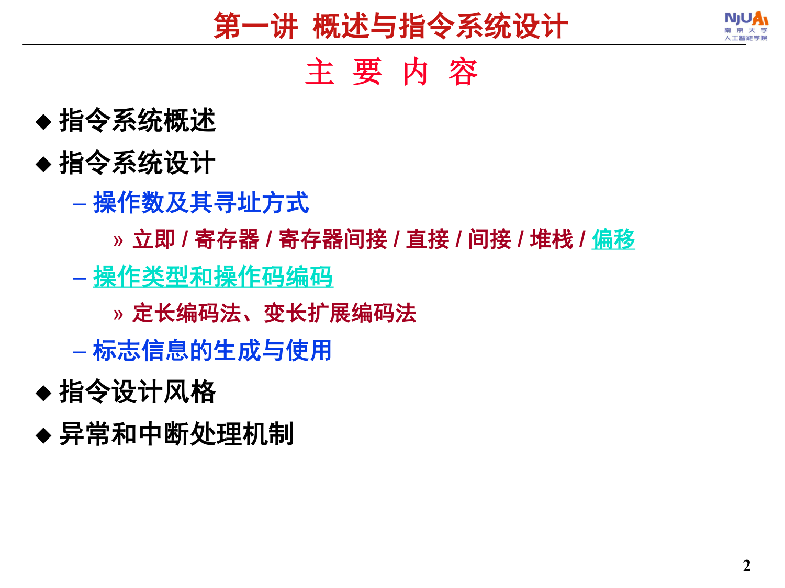
第一讲的四条主线，先记住骨架，后面每一页都挂在这棵树上：
- 指令系统概述——它是干嘛的
- 指令系统设计（核心）——操作数及寻址方式 / 操作类型与操作码编码 / 标志信息
- 指令设计风格——累加器型 / 栈型 / 通用寄存器型，以及 CISC（Complex Instruction Set Computer，复杂指令集计算机）vs RISC（Reduced Instruction Set Computer，精简指令集计算机）
- 异常和中断机制
指令系统概述
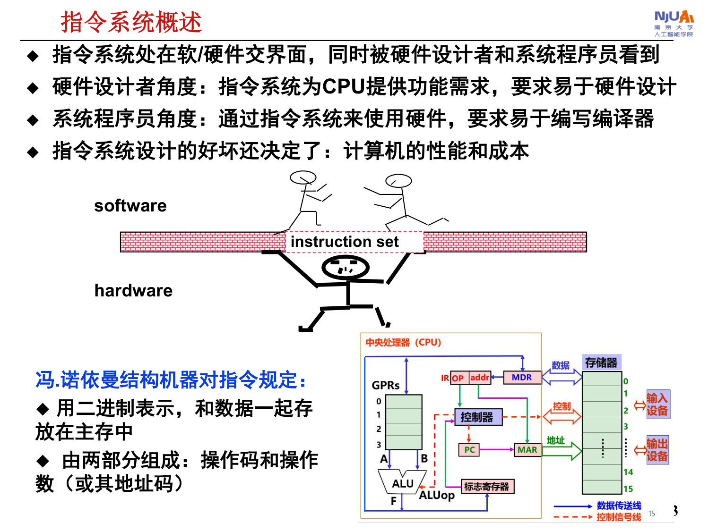
一个界面，两拨人看
指令系统站在软/硬件交界面上，两拨人都要看它：硬件设计者希望它"好实现"，系统程序员（写编译器的）希望它"好用、好生成代码"。它设计得好不好，直接决定整机的性能和成本。
冯·诺依曼对指令的两条规定
- 指令用二进制表示，并且和数据一起存放在主存中（这就是"存储程序"思想）；
- 一条指令由两部分组成：操作码 + 操作数（或其地址码）。
从指令执行周期看指令设计涉及的问题
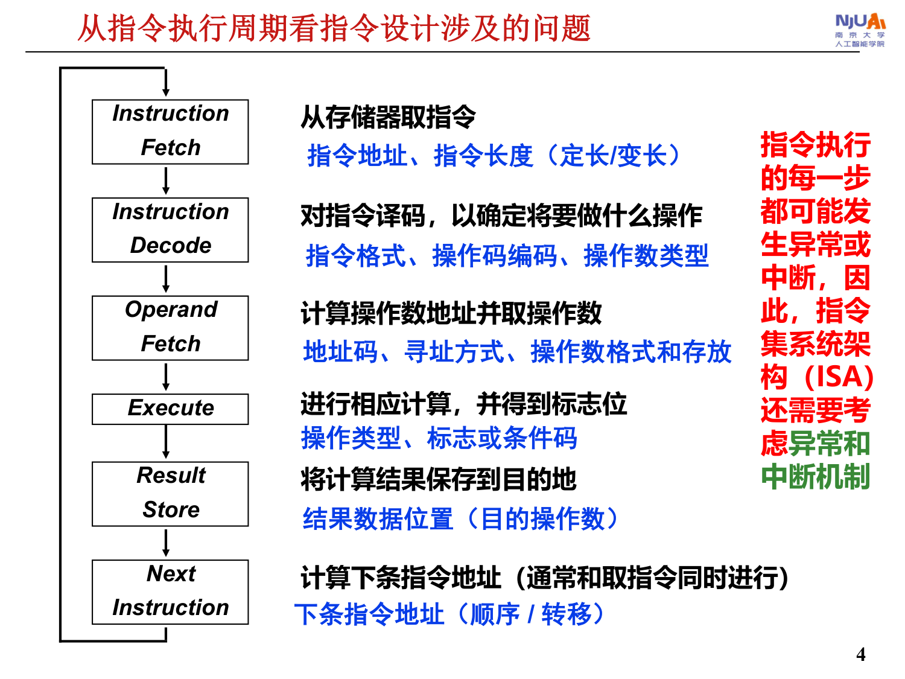
这页是整个第一讲的地图。把一条指令的执行拆成 6 步，每一步都逼出一个"设计要决定的问题"：
| 执行步骤 | 逼出的设计问题 |
|---|---|
| 取指 Fetch | 指令地址、指令长度（定长/变长） |
| 译码 Decode | 指令格式、操作码编码、操作数类型 |
| 取操作数 Operand Fetch | 地址码、寻址方式、操作数格式与存放 |
| 执行 Execute | 操作类型、标志/条件码 |
| 存结果 Result Store | 结果数据位置（目的操作数） |
| 下条指令 Next | 下条地址（顺序/转移） |
一条指令包含的信息
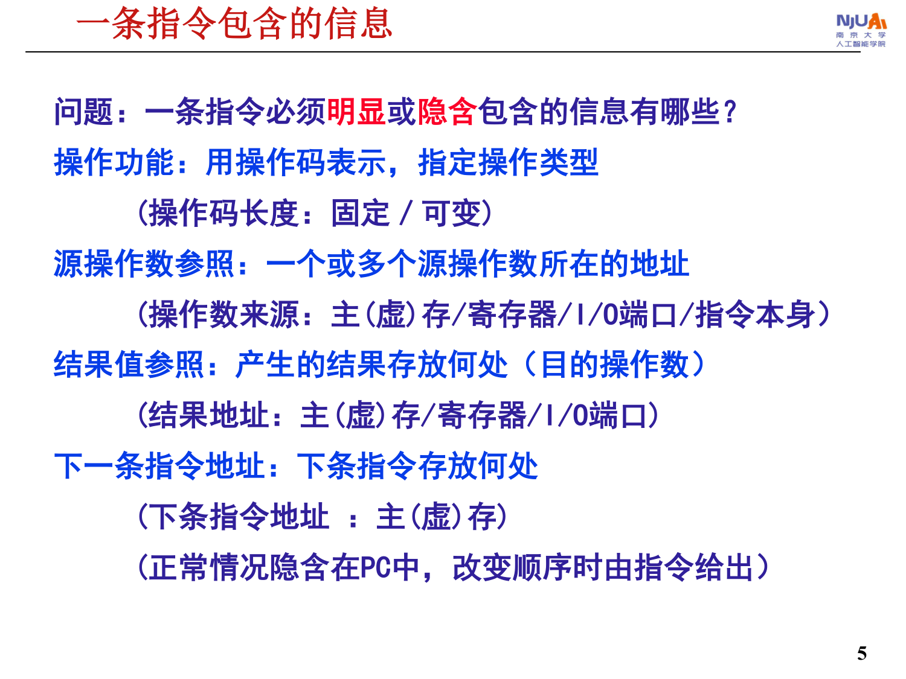
一条指令必须（显式或隐式）回答四个问题：
- 操作功能：用操作码表示，操作码长度可固定可变；
- 源操作数在哪：来源可以是主存/寄存器/I/O端口/指令本身（立即数）；
- 结果放哪（目的操作数）：主存/寄存器/I/O端口；
- 下一条指令在哪：正常隐含在 PC 中（顺序执行），改变顺序时由指令显式给出（转移）。
一条指令中应该有几个地址码字段？
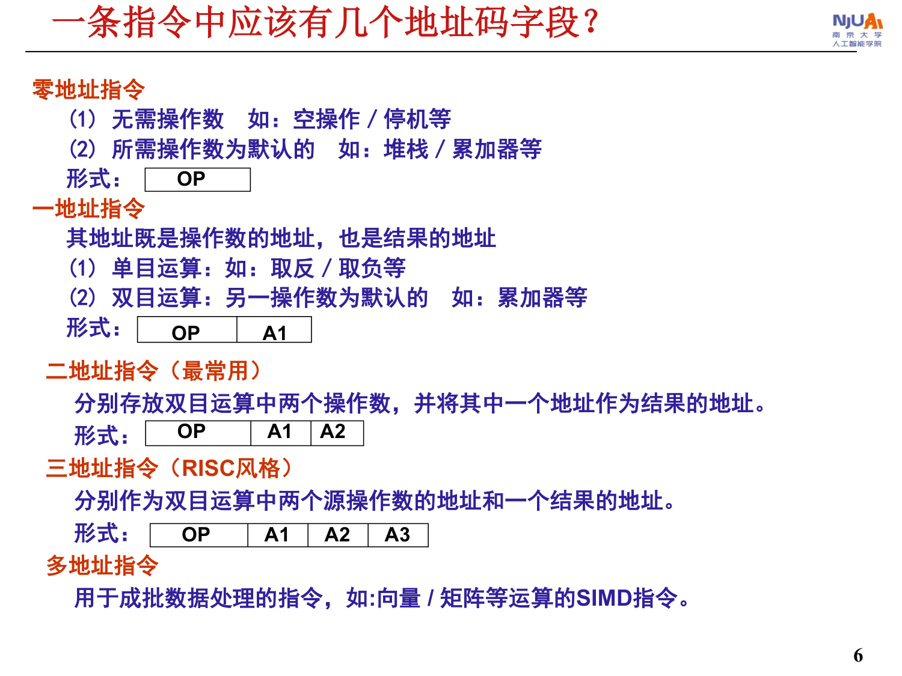
0~3 地址，越多越灵活也越长
| 类型 | 形式 | 说明 |
|---|---|---|
| 零地址 | OP | 无操作数(空操作/停机)，或操作数默认(堆栈/累加器) |
| 一地址 | OP A1 | A1 既是源也是结果；单目运算，或双目时另一数默认在累加器 |
| 二地址 | OP A1 A2 | 最常用；两个操作数，其中一个兼作结果地址 |
| 三地址 | OP A1 A2 A3 | RISC 风格；两源一目，互不覆盖 |
| 多地址 | OP A1 A2 A3 … | 成批数据，如向量/矩阵 SIMD（Single Instruction Multiple Data，单指令多数据流）指令 |
指令格式的设计
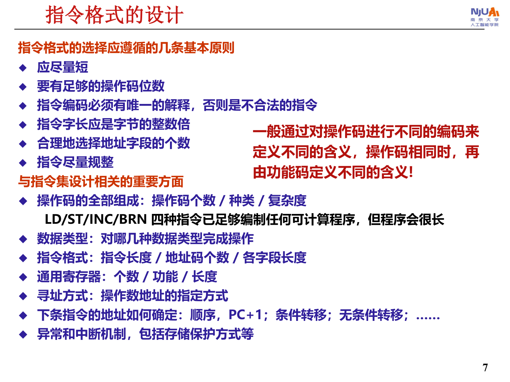
六条基本原则
尽量短、操作码位数够用、编码必须唯一可解释（否则是非法指令）、指令字长是字节整数倍、地址字段个数合理、指令尽量规整。
与指令集相关的重要决策
操作码组成、数据类型、指令格式、通用寄存器个数/长度、寻址方式、下条地址如何确定、异常中断机制。LD/ST/INC/BRN 四条指令理论上就能写任何程序，只是程序会很长——这解释了"为什么还要更多指令"。
指令格式设计——操作数类型和存储方式
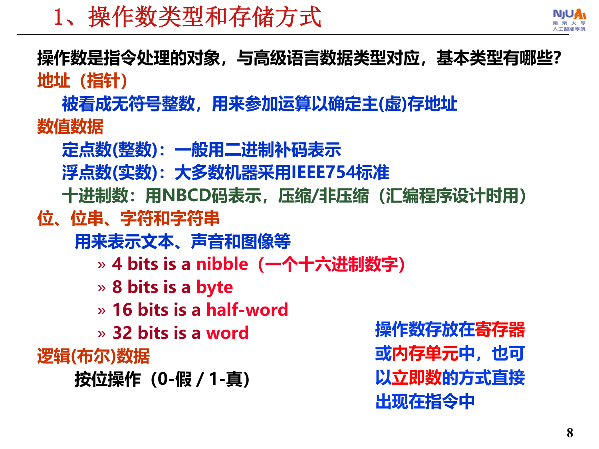
操作数就是指令处理的对象，和高级语言的数据类型对应：
- 地址(指针)：当无符号整数用来算地址；
- 数值：定点数(补码)、浮点数(IEEE754，电气电子工程师学会浮点数标准)、十进制(NBCD 码，Natural Binary Coded Decimal，自然二进制编码的十进制)；
- 位/位串/字符串：表示文本声音图像。记住单位换算 👇
- 逻辑(布尔)：按位操作，0假1真。
操作数可存在寄存器、内存单元，也可作为立即数直接出现在指令中。
IA-32 & RISC-V 数据类型对比
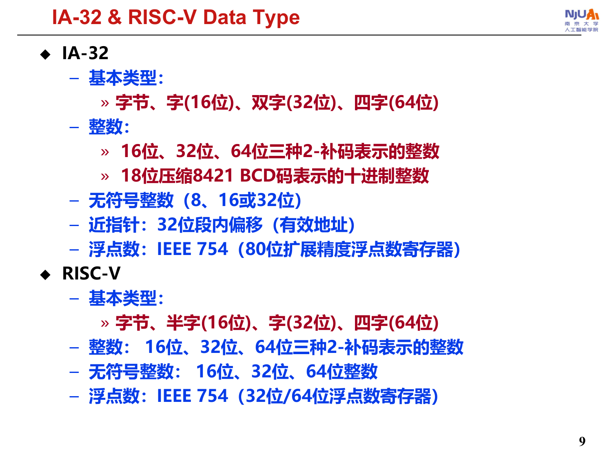
一张对比表，注意两点容易混的地方：
- "字"的定义不同：IA-32（Intel Architecture 32-bit，英特尔 32 位架构）里"字"=16 位（历史包袱，8086 时代定的）；RISC-V 里"字"=32 位。所以看到"字"先问是谁家的。
- IA-32 浮点用 80 位扩展精度寄存器；RISC-V 用规规矩矩的 32/64 位 IEEE754。
寻址方式概述（Addressing Modes）
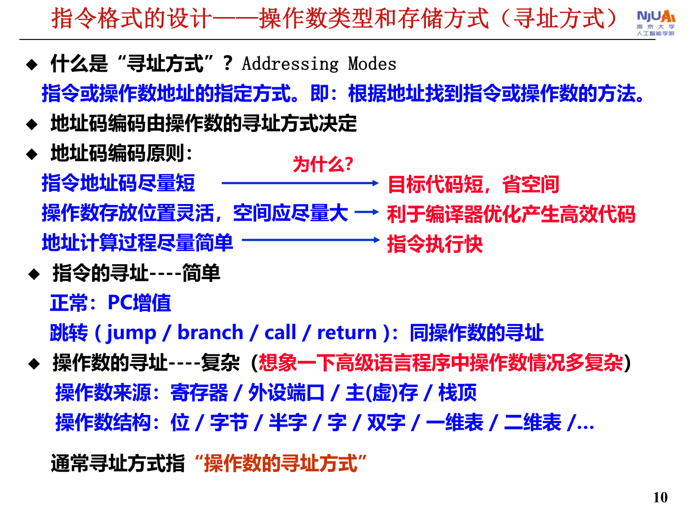
什么是寻址方式
就是"根据地址找到指令或操作数的方法"。地址码怎么编码，由寻址方式决定。
地址码编码三原则（及原因）
| 原则 | 为什么 |
|---|---|
| 指令地址码尽量短 | 目标代码短、省空间 |
| 操作数存放灵活、空间尽量大 | 利于编译器优化出高效代码 |
| 地址计算过程尽量简单 | 指令执行快 |
指令的寻址简单：正常 PC 增值，跳转时同操作数寻址。操作数的寻址复杂（想想高级语言里变量、数组、指针多花样）。通常说"寻址方式"默认指操作数的寻址方式。
背景：为什么需要这么多种寻址方式
高级语言里取一个数有无数花样，每一种都得有对应的"取数方法"，这就是寻址方式存在的根本原因：
| 高级语言写法 | 需要的寻址思路 |
|---|---|
常量 42 | 立即寻址（数就在指令里） |
局部变量 x（放寄存器） | 寄存器寻址 |
| 全局变量（固定地址） | 直接寻址 |
指针解引用 *p | 寄存器间接寻址 |
数组元素 a[i] | 变址寻址（基址+下标×元素大小） |
结构体成员 s.f | 基址+偏移寻址 |
| 函数返回地址、跳转 | 相对寻址（相对 PC） |
寻址方式的确定
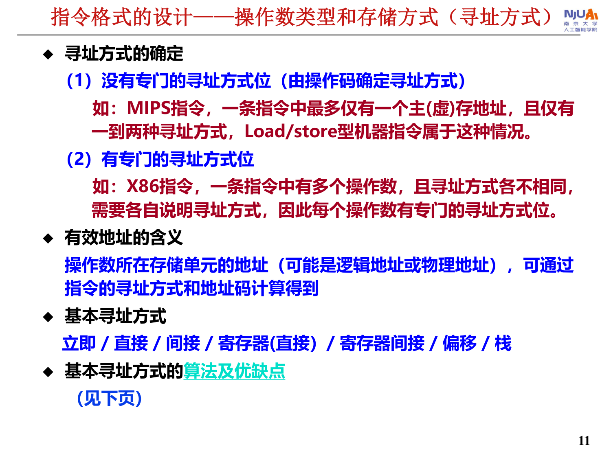
怎么告诉 CPU 用哪种寻址？两条路线
- (1) 没有专门的寻址方式位：由操作码隐含决定。如 MIPS（Microprocessor without Interlocked Pipeline Stages，无内部互锁流水级的微处理器，一种经典 RISC 架构），一条指令最多一个主存地址、寻址方式就一两种，Load/Store 型机器属于这类。
- (2) 有专门的寻址方式位：如 x86，一条指令多个操作数、各自寻址方式不同，所以每个操作数带自己的寻址方式位。
有效地址 EA（Effective Address）
EA = 操作数所在存储单元的地址，通过"寻址方式 + 地址码"计算得到。七种基本寻址：立即/直接/间接/寄存器(直接)/寄存器间接/偏移/栈——下一页给出算法和优缺点。
基本寻址方式的算法和优缺点
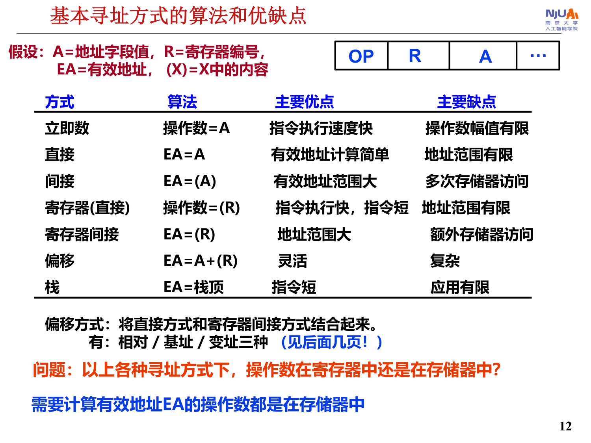
记号：A=地址字段值，R=寄存器编号，EA=有效地址，(X)=X 的内容。
| 方式 | 算法 | 操作数在哪 | 优 / 缺 |
|---|---|---|---|
| 立即 | 操作数=A | 指令中 | 快 / 幅值有限 |
| 直接 | EA=A | 存储器 | EA计算简单 / 地址范围有限 |
| 间接 | EA=(A) | 存储器 | 地址范围大 / 多次访存 |
| 寄存器(直接) | 操作数=(R) | 寄存器 | 快、指令短 / 范围有限 |
| 寄存器间接 | EA=(R) | 存储器 | 范围大 / 额外访存 |
| 偏移 | EA=A+(R) | 存储器 | 灵活 / 稍复杂 |
| 栈 | EA=栈顶 | 存储器 | 指令短 / 应用有限 |
偏移寻址方式
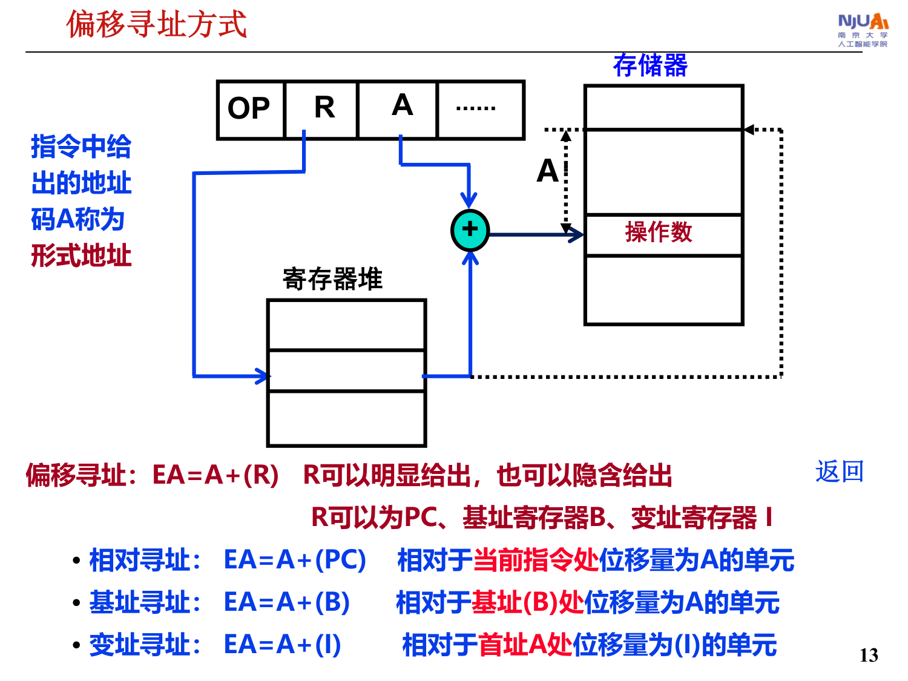
偏移寻址 EA = A + (R)，其中 A 称"形式地址"，R 可显式或隐含给出。按 R 取谁，分三种：
| 名称 | 公式 | 含义 |
|---|---|---|
| 相对寻址 | EA=A+(PC) | 相对"当前指令处"偏移 A 个单元 |
| 基址寻址 | EA=A+(B) | 相对基址 B 处偏移 A（A 可变） |
| 变址寻址 | EA=A+(I) | 相对首址 A 处偏移 (I)（I 可变，扫数组） |
变址寻址实现线性表元素的存取
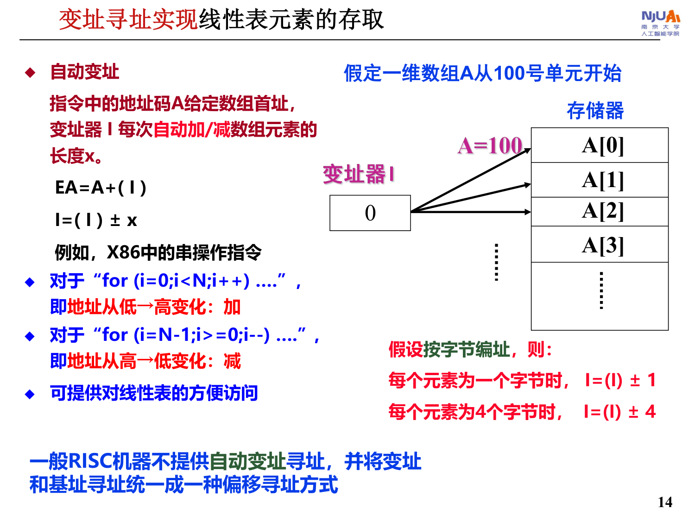
自动变址：数组循环的硬件支持
地址码 A 给数组首址，变址器 I 每次自动加/减一个元素的长度 x：EA=A+(I)，I=(I)±x。
for(i=0;i<N;i++)：地址从低→高，加；for(i=N-1;i>=0;i--)：地址从高→低，减。- 按字节编址时：元素 1 字节 I±1，元素 4 字节 I±4。
Example：MIPS32 中的循环处理
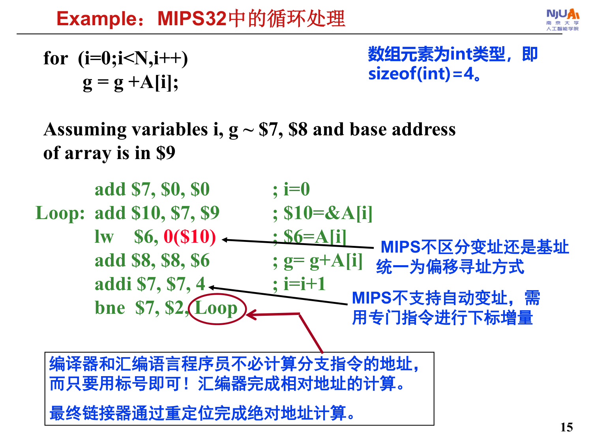
把 for(i=0;i<N;i++) g=g+A[i]; 编成汇编（i,g 在 $7,$8，数组基址在 $9，int 4 字节）：
add $7, $0, $0 # i=0 Loop: add $10, $7, $9 # $10 = &A[i] lw $6, 0($10) # $6 = A[i] —— 偏移寻址 add $8, $8, $6 # g = g + A[i] addi $7, $7, 4 # i = i+1（手动加元素大小） bne $7, $2, Loop
两个 RISC 关键点：MIPS 不区分变址/基址，统一成偏移寻址；MIPS 不支持自动变址，要专门指令做下标增量。
存储器操作数的寻址方式（地址计算）
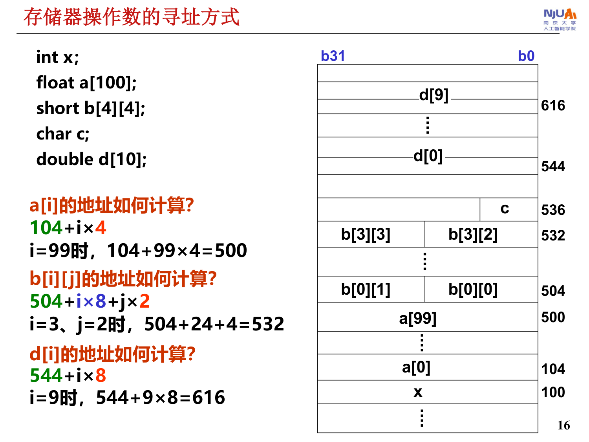
给定一组变量声明，元素地址怎么算？规律是 首址 + 下标×元素大小（二维再加一层）：
| 访问 | 公式 | 示例 |
|---|---|---|
a[i] (float) | 104+i×4 | i=99 → 500 |
b[i][j] (short[4][4]) | 504+i×8+j×2 | i=3,j=2 → 532 |
d[i] (double) | 544+i×8 | i=9 → 616 |
b[i][j] 的 i×8 是"跳过 i 整行"（每行 4 个 short=8 字节），j×2 是"行内再走 j 个元素"。这正是变址寻址的现实意义。★回顾：寻址方式小结
七种寻址一句话速记
| 方式 | EA / 操作数 | 记忆点 |
|---|---|---|
| 立即 | 操作数=A | 数就在指令里 |
| 寄存器 | 操作数=(R) | 最快，操作数在寄存器 |
| 直接 | EA=A | 地址写死在指令 |
| 间接 | EA=(A) | 指令给"地址的地址" |
| 寄存器间接 | EA=(R) | 寄存器里放地址 = C 的指针 |
| 相对 | EA=A+(PC) | 跳转用，相对当前指令 |
| 基址/变址 | EA=A+(B/I) | 结构体 / 数组用 |
| 堆栈 | EA=栈顶 | 零地址指令 |
指令格式设计——操作类型与操作编码
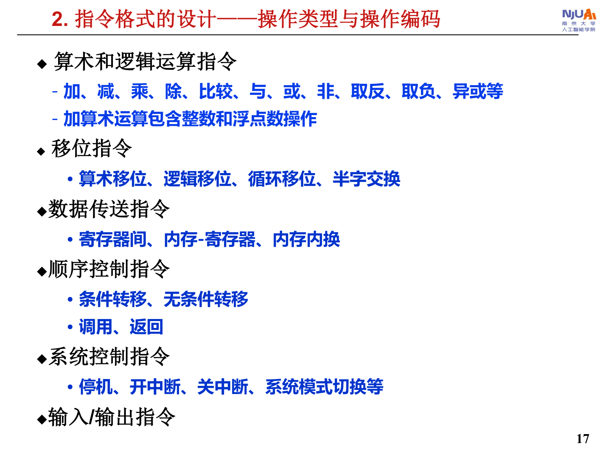
操作码要覆盖的几大类操作：
- 算术和逻辑：加减乘除、比较、与或非、取反取负、异或；
- 移位：算术/逻辑/循环移位、半字交换；
- 数据传送：寄存器间、内存↔寄存器、内存内换；
- 顺序控制：条件转移、无条件转移、调用 / 返回；
- 系统控制：停机、开/关中断、模式切换；
- 输入/输出。
2.1 操作码的编码：两种方式
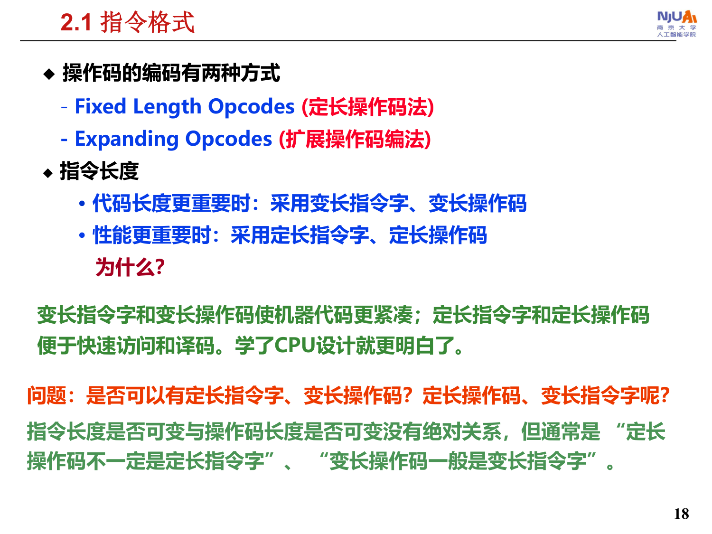
- 定长操作码（Fixed Length）：所有指令操作码位数一样。译码快，但有信息冗余。
- 扩展操作码（Expanding）：操作码长度可变，短码给常用指令。代码紧凑，译码稍慢。
取舍原则：代码长度更重要 → 变长指令字、变长操作码；性能更重要 → 定长指令字、定长操作码（便于快速取指译码）。
定长操作码编码（Fixed Length Opcodes）
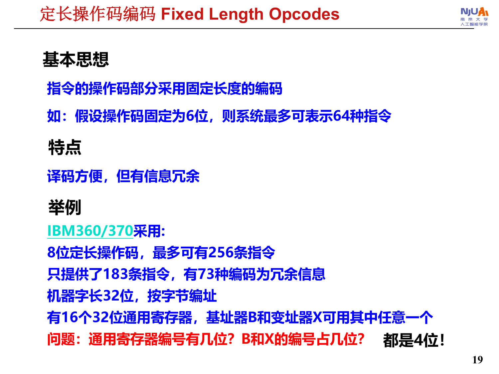
思想：操作码用固定长度。如 6 位 → 最多 2⁶=64 种指令。特点：译码方便，但有冗余。
例：IBM360/370 用 8 位定长操作码，最多 256 条，实际只用 183 条，73 种编码冗余；机器字长 32 位、按字节编址；16 个 32 位通用寄存器。
IBM370 指令格式
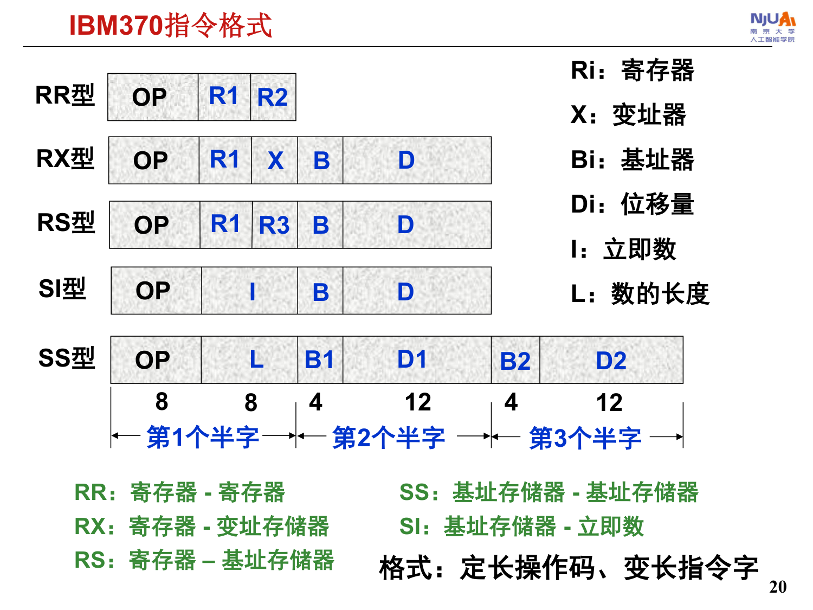
五种格式，体现"定长操作码（8位）+ 变长指令字"：
| 型 | 含义 |
|---|---|
| RR | 寄存器-寄存器 |
| RX | 寄存器-变址存储器 |
| RS | 寄存器-基址存储器 |
| SI | 基址存储器-立即数 |
| SS | 基址存储器-基址存储器 |
扩展（变长）操作码编码
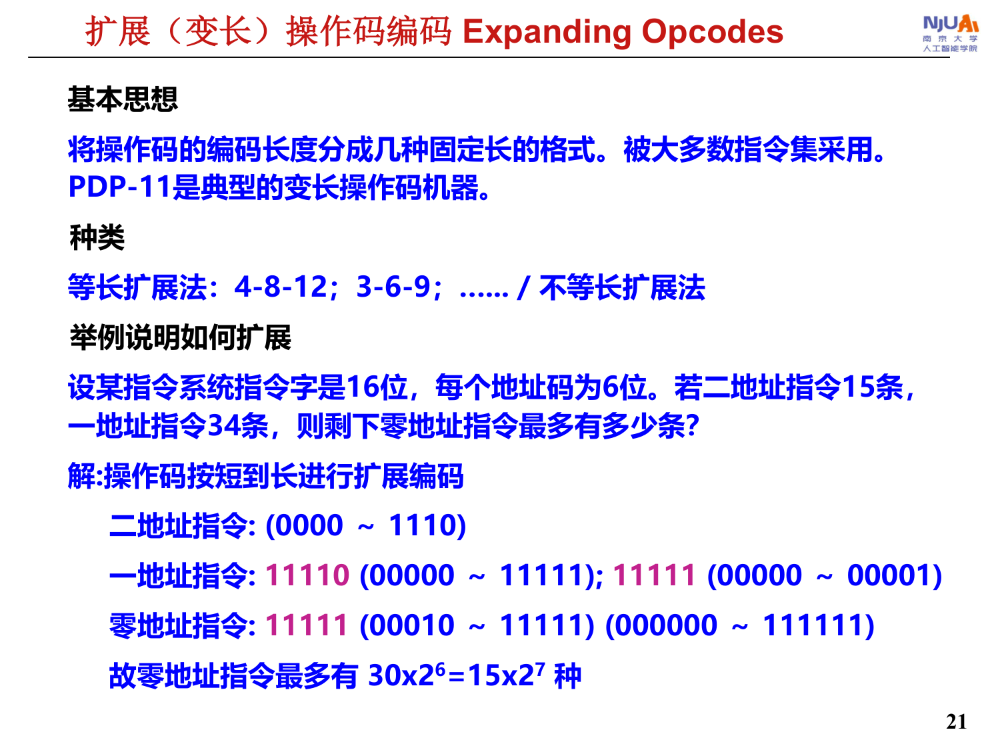
例题原型（和你的习题 6 几乎一样）
指令字 16 位，每个地址码 6 位。若二地址 15 条、一地址 34 条，则零地址最多多少？
操作码"按短到长"扩展：
- 二地址：OP 占 4 位（16−12），用 0000~1110 共 15 个，留 1111 往下扩；
- 一地址：OP 占 10 位（16−6），高 4 位=1111，后 6 位再分；34 条用掉若干前缀；
- 零地址：OP 占 16 位，把剩余前缀×2⁶ 全展开。
单地址最多 = 64×(16−k₂) − ⌈k₀/64⌉。把"剩余编码×2^(地址码位数)"想成一棵树就不会错。
背景：标志位是什么——从减法看"比较"
C 里 if(a>b) 一句，到机器层面要拆成两步：先 cmp（其实是做 a−b 减法），再根据结果跳转。CPU 没有"比较器"，比较 = 减法 + 看标志位。
四个标志位（条件码 CC，Condition Code）
| 标志 | 名 | 含义 |
|---|---|---|
| ZF | Zero | 结果为 0 则 1 |
| SF | Sign(negative) | 结果最高位（符号）为 1 则 1 |
| CF | Carry/借位 | 无符号运算的进位/借位 |
| OF | Overflow | 带符号运算溢出则 1 |
2.3 指令格式设计——条件测试方式
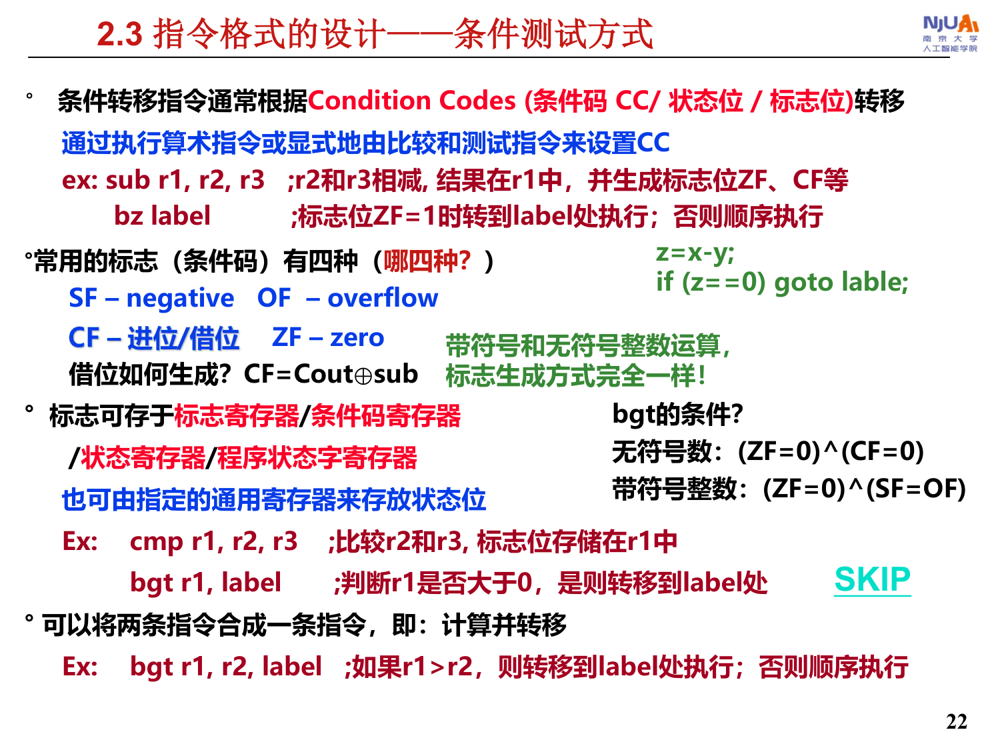
条件转移根据条件码 CC转移。CC 由算术指令产生，或由专门的比较/测试指令显式设置。
sub r1, r2, r3 # r2-r3 → r1，并生成 ZF/CF… bz label # ZF=1 时转 label，否则顺序执行
四种标志 SF/OF/CF/ZF。判"大于"的条件：
- 无符号数：A>B ⟺ (ZF=0)·(CF=0)；
- 带符号数：A>B ⟺ (ZF=0)·(SF=OF)。
bgt r1,r2,label）。标志信息是干什么的（手算示例）
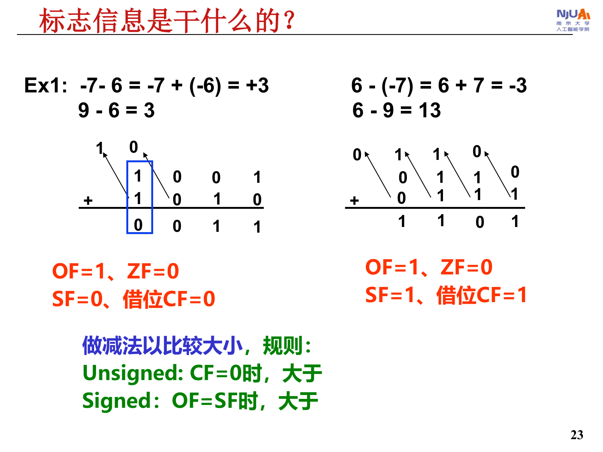
两个减法例子，用补码加法实现，逐位看进位算出四个标志。结论那两句最有用：
IA-32 中的条件转移指令
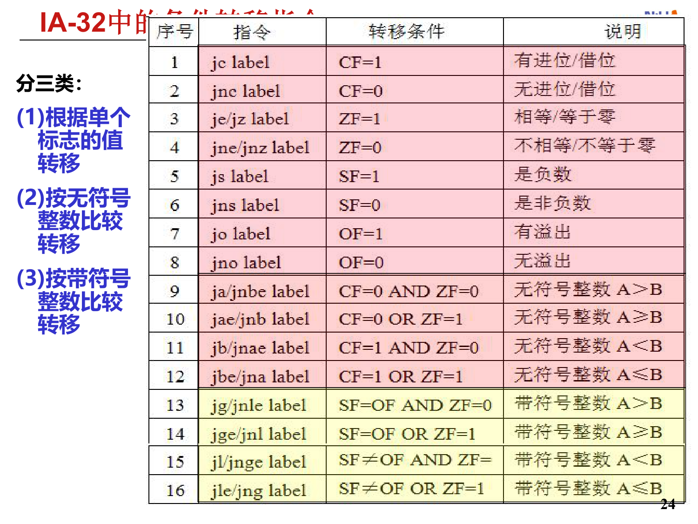
一张 16 条 jxx 指令表，分三类，记分类比记全表重要：
- (1) 看单个标志：jc/jnc(CF)、je/jz(ZF)、js(SF)、jo(OF)…
- (2) 无符号比较：ja/jae/jb/jbe（above/below），看 CF、ZF；
- (3) 带符号比较：jg/jge/jl/jle（greater/less），看 SF、OF、ZF。
回顾：模型机 M 的指令格式
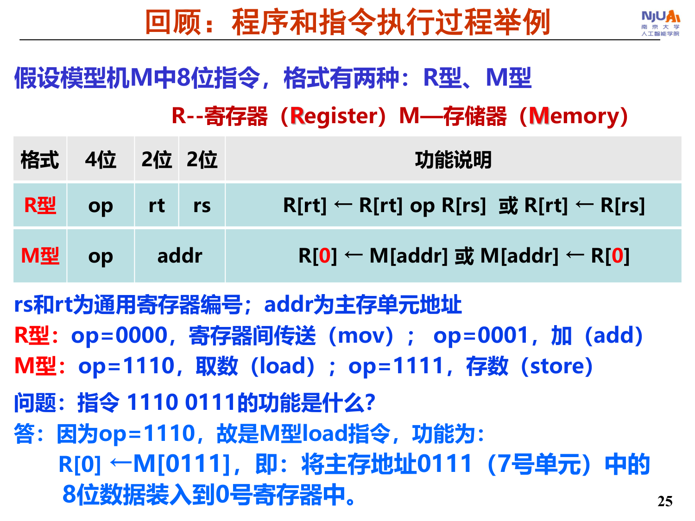
一个 8 位指令的玩具机，两种格式：
| 格式 | 4位 | 2位 | 2位 | 功能 |
|---|---|---|---|---|
| R 型 | op | rt | rs | R[rt]←R[rt] op R[rs] 或 R[rt]←R[rs] |
| M 型 | op | addr | R[0]←M[addr] 或 M[addr]←R[0] | |
op=0000 传送(mov)、0001 加(add)、1110 取数(load)、1111 存数(store)。
例：指令 1110 0111，op=1110 是 load，功能 R[0]←M[0111]，即把 7 号单元数据装入 0 号寄存器。
回顾：z=x+y 的程序内存布局
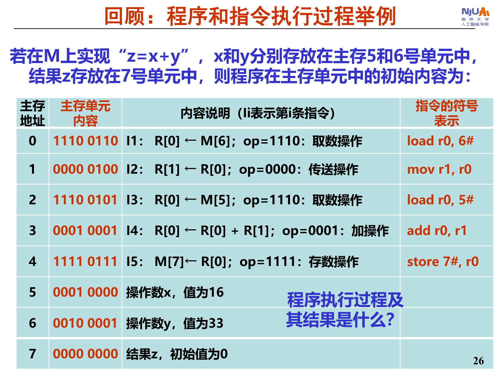
在模型机 M 上实现 z=x+y（x,y 在 5,6 号，z 存 7 号），程序的初始内存内容：
| 地址 | 内容 | 含义 | 助记符 |
|---|---|---|---|
| 0 | 1110 0110 | R[0]←M[6] | load r0,6# |
| 1 | 0000 0100 | R[1]←R[0] | mov r1,r0 |
| 2 | 1110 0101 | R[0]←M[5] | load r0,5# |
| 3 | 0001 0001 | R[0]←R[0]+R[1] | add r0,r1 |
| 4 | 1111 0111 | M[7]←R[0] | store 7#,r0 |
回顾：指令 I1 的执行流程
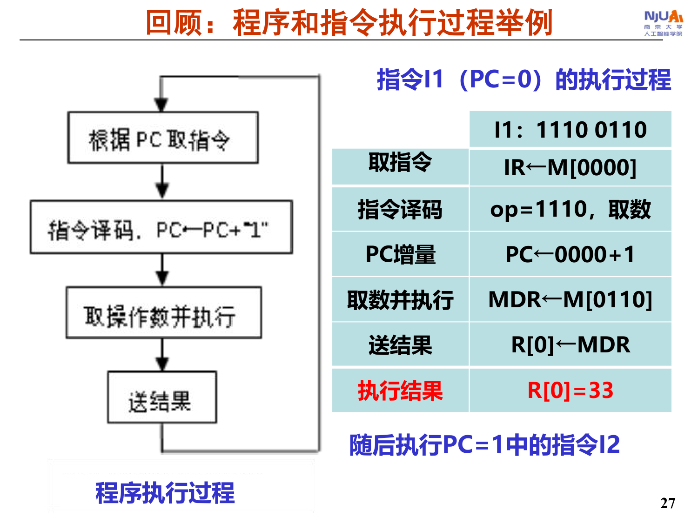
跟踪 PC=0 处第一条指令 1110 0110 的完整执行：
| 阶段 | 动作 |
|---|---|
| 取指令 | IR←M[0000] |
| 译码 | op=1110，取数 |
| PC 增量 | PC←0+1 |
| 取数执行 | MDR←M[0110] |
| 送结果 | R[0]←MDR，结果 R[0]=33 |
★回顾：操作码编码 与 标志位
操作码编码
定长（译码快、有冗余）vs 扩展（紧凑、短码给常用）。算条数三步：定操作码位数→数已用编码→剩余前缀×2^(后续位数)往下展开。
四个标志速查
| 标志 | 看它判什么 |
|---|---|
| ZF | 相等 / 为零 |
| SF | 正负 |
| CF | 无符号大小（借位） |
| OF | 带符号溢出 |
3. 指令设计风格——按操作数位置分
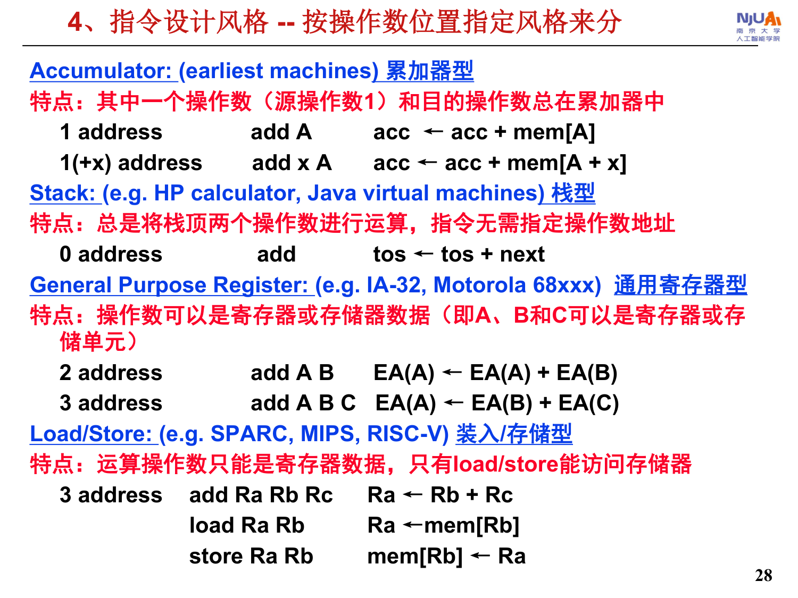
四种风格，看"操作数默认放哪"：
| 风格 | 特点 | add 形式 |
|---|---|---|
| 累加器型 | 一个源和目的总在累加器 | add A → acc←acc+M[A] |
| 栈型 | 总取栈顶两个运算，无需地址 | add → tos←tos+next |
| 通用寄存器型 | 操作数可寄存器或存储器 | add A B C |
| Load/Store型 | 只有 load/store 访存，运算只对寄存器 | add Ra Rb Rc |
指令风格比较（C = A + B）
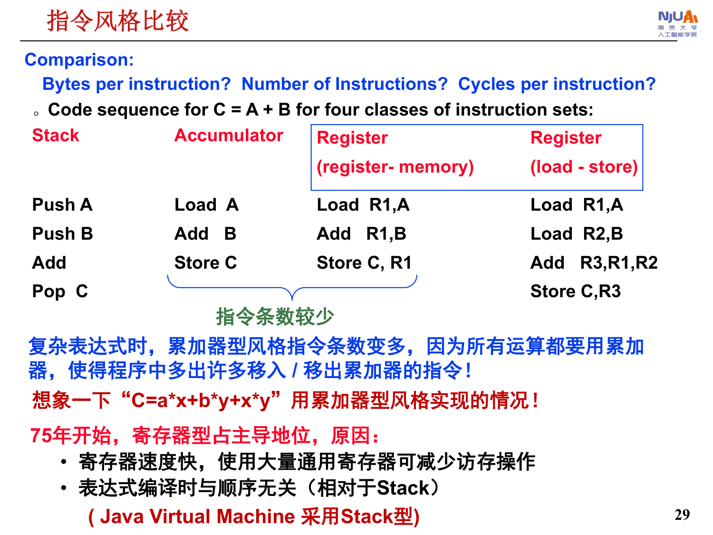
同一句 C=A+B，四种风格的代码：
| 栈型 | 累加器 | 寄存器(reg-mem) | Load/Store |
|---|---|---|---|
| Push A Push B Add Pop C | Load A Add B Store C | Load R1,A Add R1,B Store C,R1 | Load R1,A Load R2,B Add R3,R1,R2 Store C,R3 |
复杂表达式时累加器型指令数暴涨（频繁移入移出累加器）。1975 年起寄存器型占主导：寄存器快、减少访存；表达式编译与顺序无关（相对栈）。JVM 仍用栈型。
Examples of Register Usage
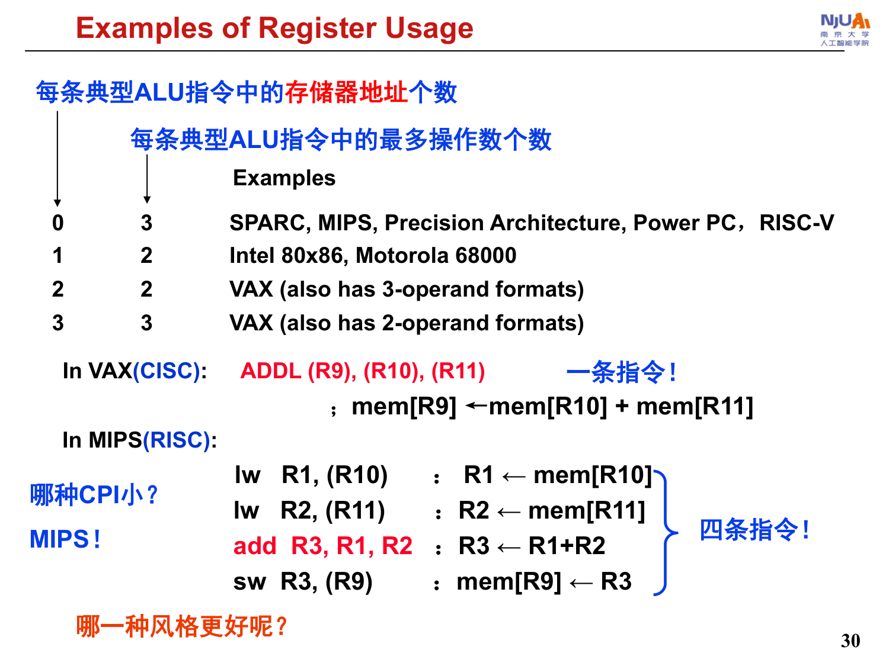
按"每条 ALU 指令最多几个存储器地址 / 几个操作数"分类。VAX（Virtual Address eXtension，DEC 公司经典 CISC 小型机）(CISC) vs MIPS(RISC) 实现 mem[R9]←mem[R10]+mem[R11]：
VAX(CISC): ADDL (R9),(R10),(R11) # 一条指令！ MIPS(RISC): lw R1,(R10) lw R2,(R11) add R3,R1,R2 sw R3,(R9) # 四条指令
指令设计风格——按复杂度分（CISC）
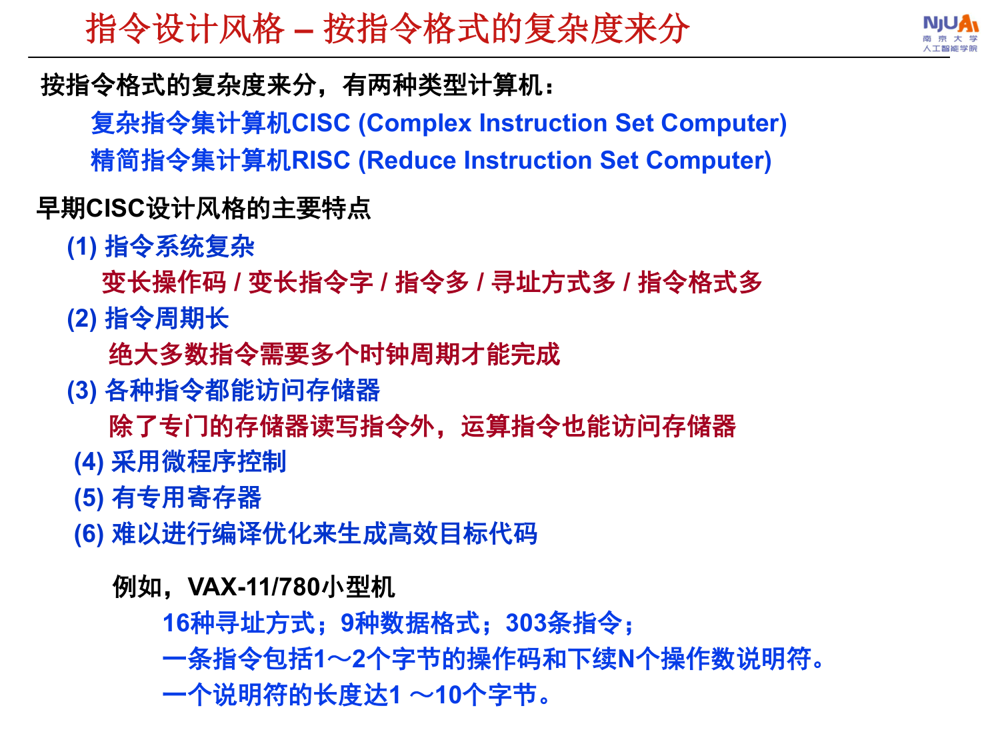
两大阵营：CISC（复杂指令集）vs RISC（精简指令集）。早期 CISC 六大特点：
- 指令系统复杂：变长操作码/变长指令字/指令多/寻址方式多/格式多；
- 指令周期长（多数要多个时钟周期）；
- 各种指令都能访存；
- 采用微程序控制；
- 有专用寄存器；
- 难以编译优化生成高效代码。
CISC 的缺陷与 RISC 的诞生
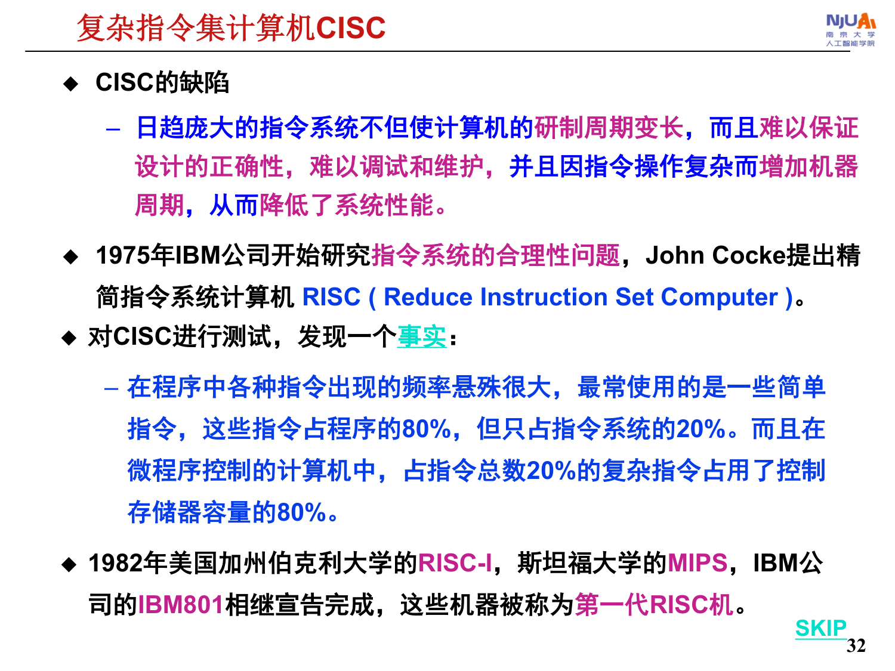
CISC 越长越大：研制周期长、难保证正确、难调试维护、机器周期增加拉低性能。
1975 年 IBM 的 John Cocke 提出 RISC；1982 年 Berkeley 的 RISC-I、Stanford 的 MIPS、IBM 801 相继完成，即第一代 RISC 机。
Top 10 80x86 Instructions
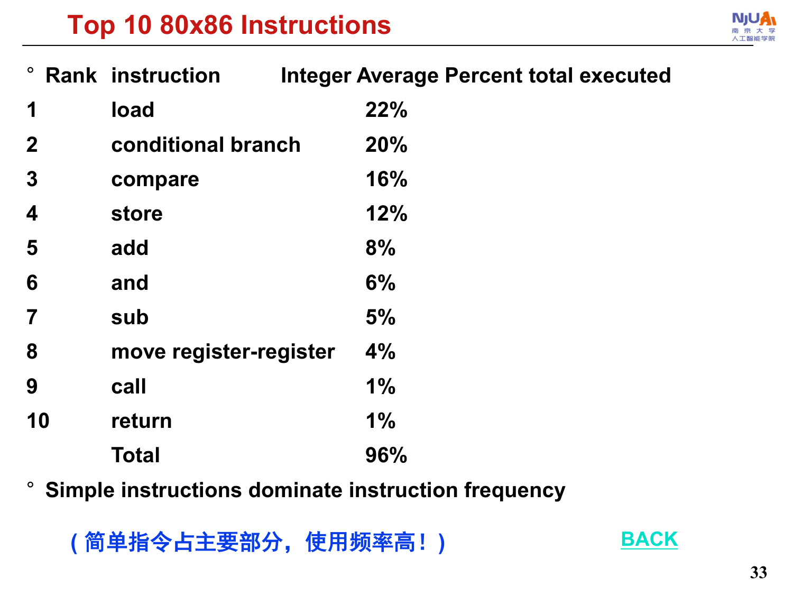
实测数据佐证 80/20：前 10 条指令就占了 96% 的执行次数。
| 排名 | 指令 | 占比 |
|---|---|---|
| 1 | load | 22% |
| 2 | conditional branch | 20% |
| 3 | compare | 16% |
| 4 | store | 12% |
| 5 | add | 8% |
结论：简单指令统治执行频率。所以把简单指令做快，比堆砌复杂指令更值——RISC 的设计哲学。
RISC 设计风格的主要特点
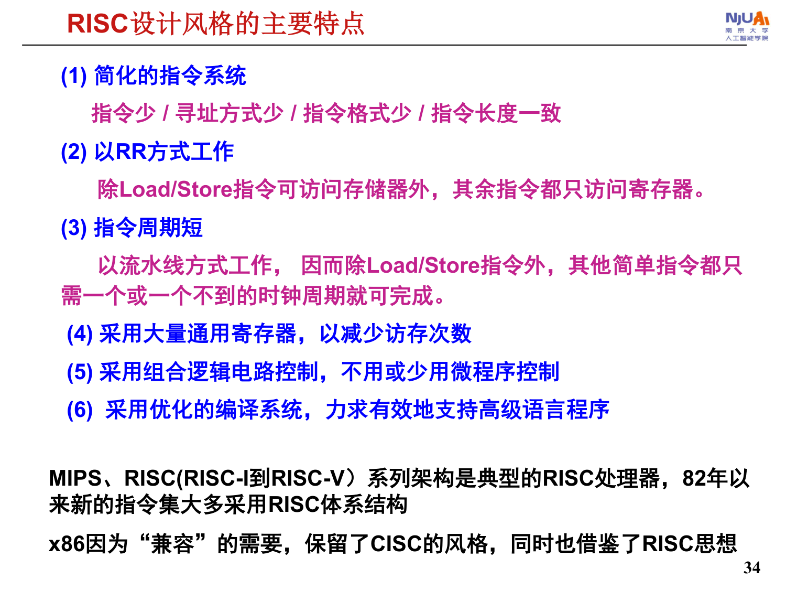
与 CISC 六点逐条对着记：
- 简化的指令系统：指令少/寻址方式少/格式少/长度一致；
- 以 RR 方式工作：除 Load/Store 外都只访问寄存器；
- 指令周期短：流水线工作，简单指令一个（或不到一个）时钟周期；
- 大量通用寄存器，减少访存；
- 组合逻辑控制，少用/不用微程序；
- 优化的编译系统。
4. 异常和中断
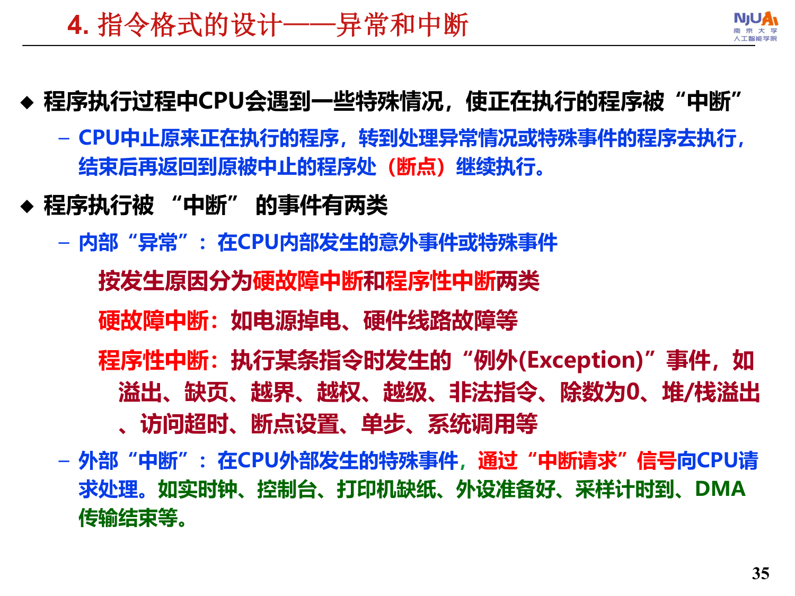
程序执行中 CPU 遇到特殊情况被"中断"：中止当前程序，转去处理，处理完回到断点继续。两类事件：
- 内部"异常"（CPU 内部发生）：
- 硬故障中断：电源掉电、硬件线路故障；
- 程序性中断（Exception）：溢出、缺页、越界、越权、非法指令、除数为 0、栈溢出、断点、单步、系统调用等。
- 外部"中断"（CPU 外部，靠中断请求信号）：实时钟、打印机缺纸、外设就绪、DMA（Direct Memory Access，直接存储器存取）结束等。
异常和中断的处理
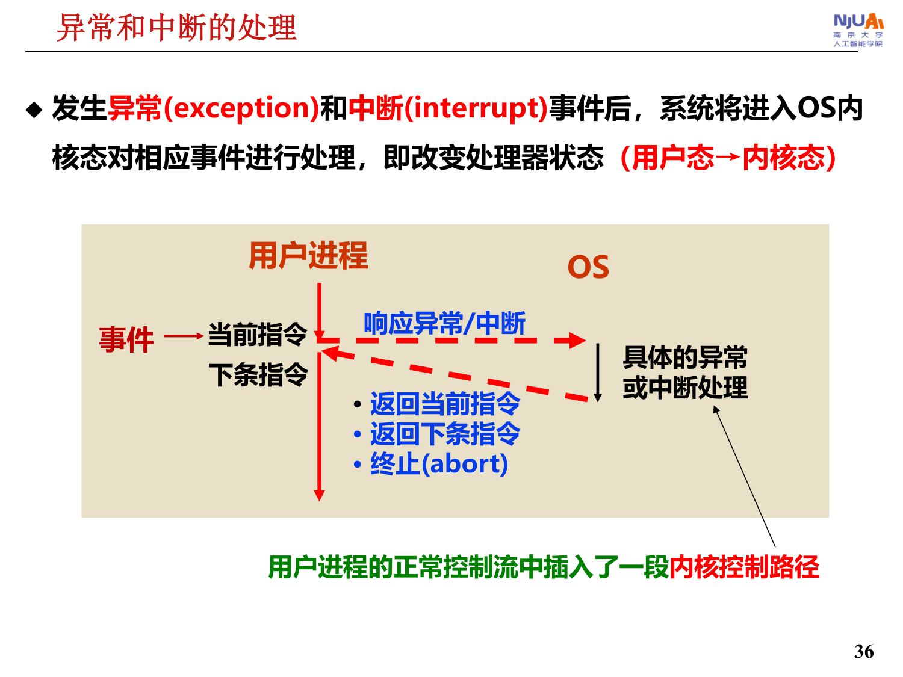
发生异常/中断后进入 OS（Operating System，操作系统）内核处理，处理器状态从用户态→内核态。处理完有三种去向：
- 返回当前指令（重新执行，如缺页处理完）；
- 返回下条指令（如系统调用）；
- 终止(abort)（不可恢复的错误）。
第一讲小结
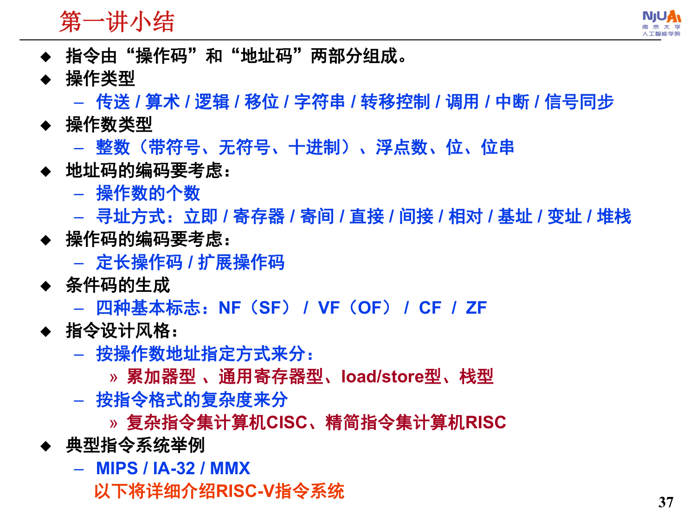
教材自带的总览页，直接对照复习。下一页 R3 是我帮你再串一次的"全景图"。
★回顾：第一讲全景串讲
设计一套指令系统，要依次决定什么
- 地址码个数（0~3）：决定操作码位数 → 影响指令条数（习题6/8）；
- 寻址方式：立即/寄存器/直接/间接/寄存器间接/相对/基址/变址/堆栈（习题2.4/3/8）；
- 操作码编码：定长 or 扩展（习题6）；
- 标志/条件码：ZF/SF/CF/OF，怎么生成怎么用；
- 指令风格：累加器/栈/通用寄存器/Load-Store；
- 复杂度路线：CISC vs RISC（习题2.6）；
- 异常中断机制（习题2.1）。
CISC vs RISC 对照
| CISC | RISC | |
|---|---|---|
| 指令 | 多、变长、寻址多 | 少、定长、寻址少 |
| 访存 | 各种指令都能 | 只有 Load/Store |
| 控制 | 微程序 | 组合逻辑 |
| 周期 | 长、多周期 | 短、流水线 |
背景：为什么学 RISC-V
第一讲讲的是"通用设计原则"，第二讲拿 RISC-V（第五代精简指令集，由加州大学伯克利分校发起的开源 ISA）当活体标本。为什么挑它？
- 开源免费：x86 是 Intel/AMD 的，ARM 要授权费，RISC-V 谁都能用、能改；
- 模块化：一个小而稳的核心（RV32I，RISC-V 32-bit base Integer，32 位整数基础指令集）+ 可选扩展（M 乘除/F 浮点/A 原子/C 压缩…），按需拼装；
- 学术界事实标准：教材、考试都用它，结构干净没历史包袱，适合学原理。
第二讲 主要内容
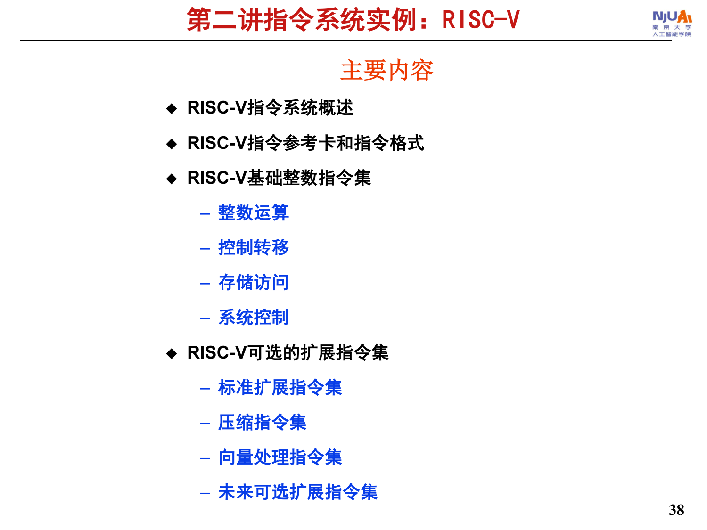
第二讲骨架：RISC-V 概述 → 指令参考卡和格式 → 基础整数指令集 RV32I（整数运算/控制转移/存储访问/系统控制）→ 可选扩展集（M/F/D/A/C/V）。考试重心是 RV32I。
RISC-V 指令系统概述
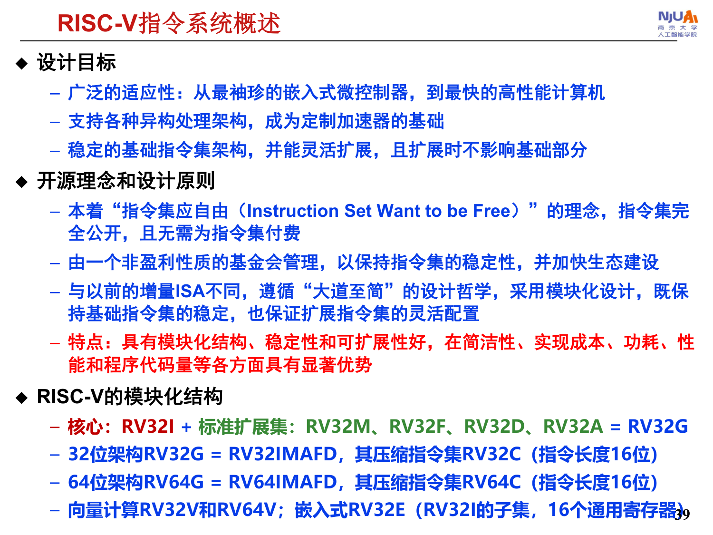
设计目标 & 理念
广泛适应（从微控制器到超算）、支持异构、基础集稳定可灵活扩展。开源理念："指令集应自由"，由非盈利基金会管理。
模块化结构（要记）
- I=基础整数，M=乘除，A=原子，F=单精度浮点，D=双精度，C=压缩(16位)；
- 64 位架构 RV64G = RV64IMAFD；嵌入式 RV32E（I 的子集，16 个寄存器）。
指令参考卡 ①
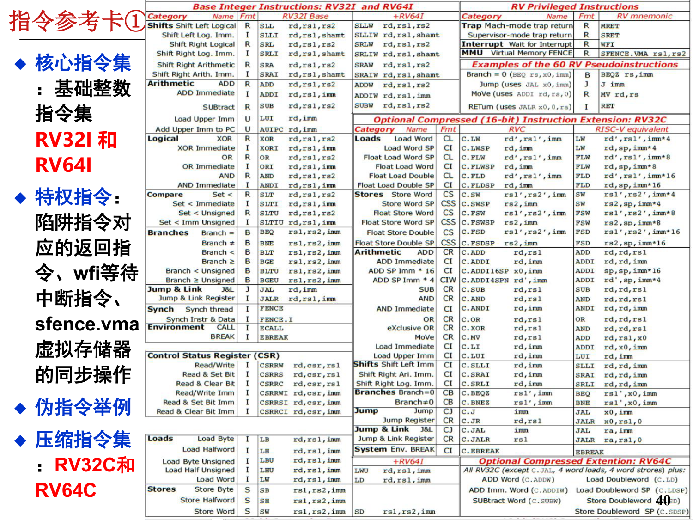
这是查阅用的大表，不用背。包含：核心集 RV32I/RV64I、特权指令（MRET/SRET/WFI/SFENCE）、伪指令举例、压缩集 RV32C/RV64C。
j label=jal x0,label；mv rd,rs=addi rd,rs,0；ret=jalr x0,0(ra)；li=lui+addi 组合。指令参考卡 ②
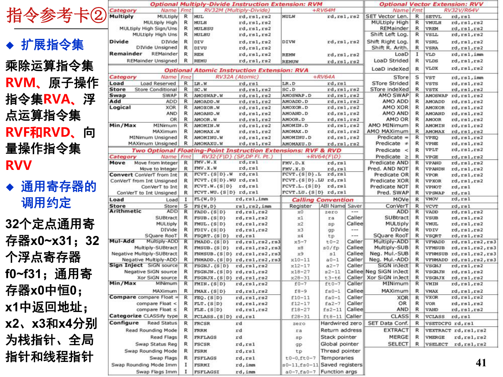
扩展集与调用约定速查：乘除 RVM、原子 RVA、浮点 RVF/RVD、向量 RVV。下半张是寄存器调用约定（caller/callee 谁保存），p42 会展开成中文表。
x0=恒 0；x1=ra=返回地址；x2=sp=栈指针；x10~x17=a0~a7=参数/返回值。习题 13/16 入口参数在 a0/a1、返回值在 a0，就是这套约定。RV32I 寄存器的功能定义和 ABI 名
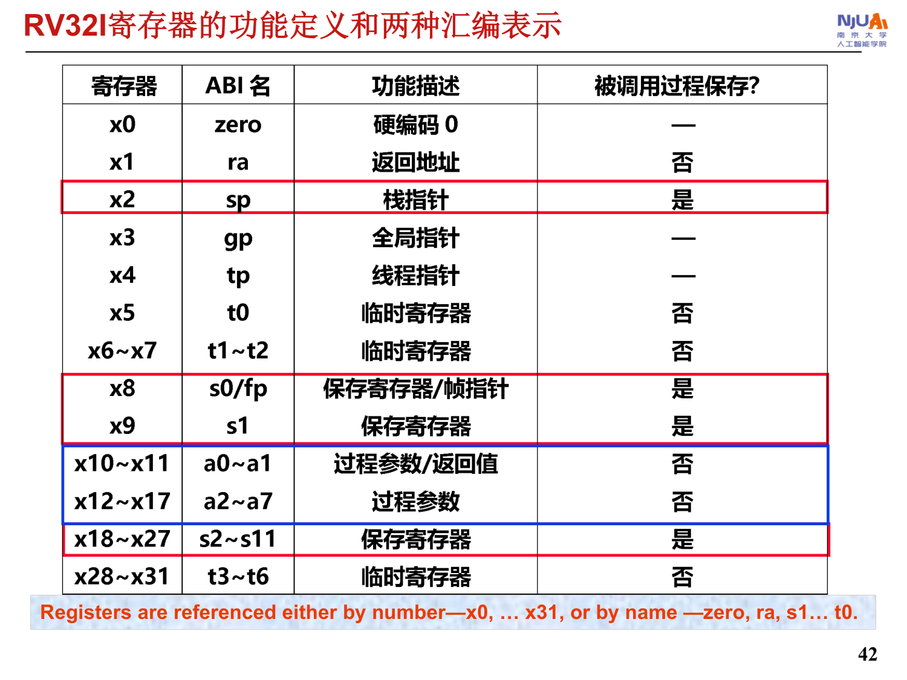
32 个通用寄存器 x0~x31，每个有个"ABI（Application Binary Interface，应用程序二进制接口）别名"。必记这几行：
| 寄存器 | ABI名 | 用途 | 调用保存? |
|---|---|---|---|
| x0 | zero | 硬编码 0（读永远是0） | — |
| x1 | ra | 返回地址 | 否 |
| x2 | sp | 栈指针 | 是 |
| x5~x7,x28~x31 | t0~t6 | 临时寄存器 | 否 |
| x8~x9,x18~x27 | s0~s11 | 保存寄存器 | 是 |
| x10~x17 | a0~a7 | 参数 / 返回值 | 否 |
add t0,zero,zero 就是清零）；a0/a1 是参数、a0 是返回值；t0/t1 是临时。读这些题的代码先把别名翻成"它是参数还是临时"。背景：为什么 RISC-V 要分 6 种指令格式
不同指令需要的"字段"不一样：有的要两个源寄存器（add），有的要立即数（addi），有的要目的寄存器有的不要（store）。如果只用一种格式，会浪费很多位。
但译码器又希望字段位置尽量固定（rs1、rs2、rd 永远在同样的 bit 上，译码电路最简单）。6 种格式就是这两个诉求的折中：
| 格式 | 给谁用 |
|---|---|
| R | 寄存器-寄存器运算（add/sub） |
| I | 短立即数 / Load（addi/lw/jalr） |
| S | Store（sw/sh/sb） |
| B | 条件分支（beq/bne…） |
| U | 长立即数（lui/auipc） |
| J | 无条件跳转（jal） |
32 位 RISC-V 指令格式
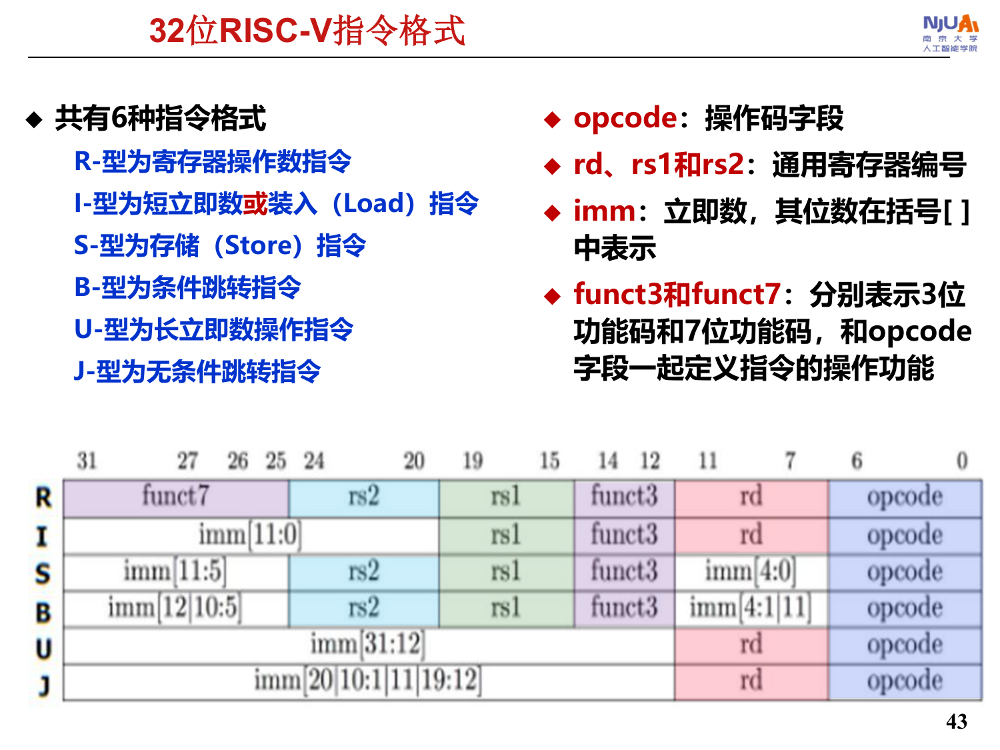
6 种格式的字段布局（这张图是 RISC-V 的命脉）：
- opcode(7位,最低)：操作码字段；
- rd / rs1 / rs2：通用寄存器编号（各 5 位，因 32 个寄存器）；
- imm：立即数（位数见 [ ]）；
- funct3 / funct7：3 位、7 位功能码，和 opcode 一起最终确定操作。
16 位 RISC-V 压缩指令格式
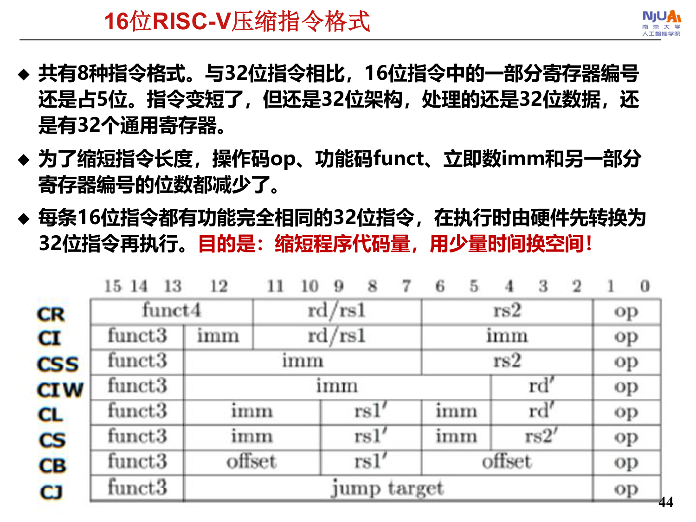
8 种压缩格式（CR/CI/CSS/CIW/CL/CS/CB/CJ）。要点三句：
- 指令变 16 位，但仍是 32 位架构，处理 32 位数据、仍是 32 个寄存器；
- 靠减少 op/funct/imm 和部分寄存器编号的位数来压缩；
- 每条 16 位指令都有功能完全相同的 32 位指令，执行时硬件先展开成 32 位。
RISC-V 基础整数指令集（RV32I）概览
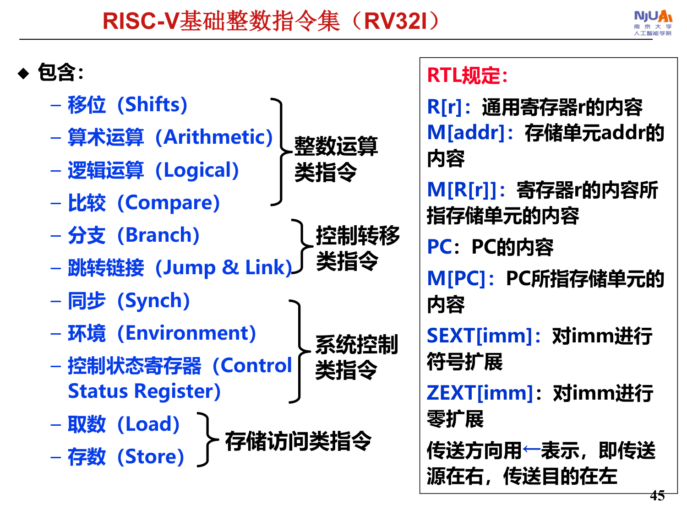
RV32I 按功能分四大类：
| 大类 | 包含 |
|---|---|
| 整数运算 | 移位 Shifts / 算术 / 逻辑 / 比较 |
| 控制转移 | 分支 Branch / 跳转链接 Jump&Link |
| 系统控制 | 同步 / 环境 / 控制状态寄存器 CSR（Control and Status Register） |
| 存储访问 | 取数 Load / 存数 Store |
R[r]=寄存器 r 内容；M[addr]=存储单元内容；M[R[r]]=以寄存器内容为地址的存储单元；SEXT[imm]=符号扩展，ZEXT[imm]=零扩展；箭头 ← 表示传送（源在右、目的在左）。RV32I 整数运算类指令表
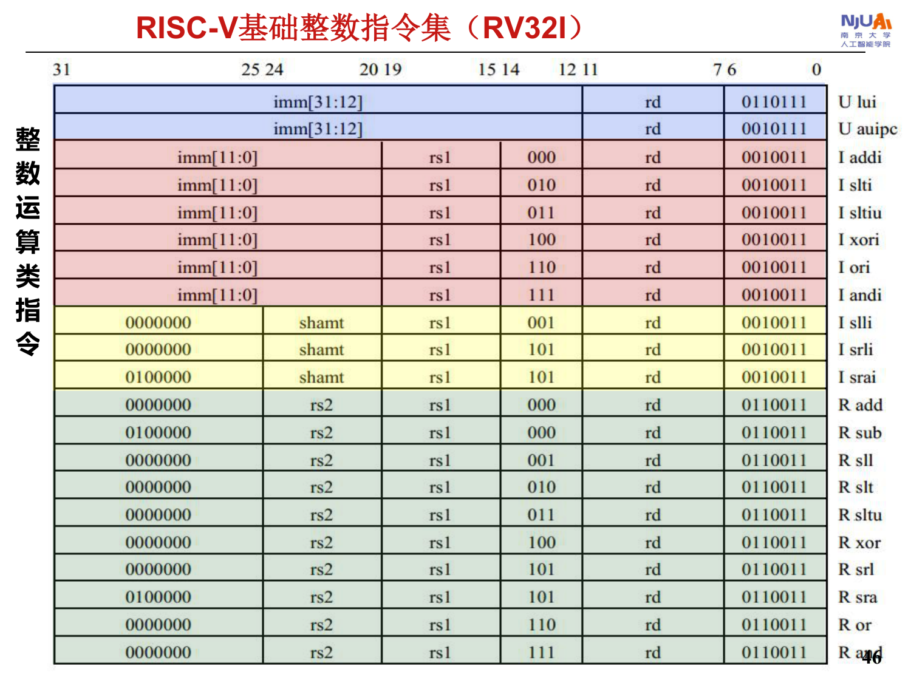
这张是整数运算的编码全表（U/I/R 型）。不用背编码，但要会"按表查/填"。重点掌握这些指令的功能：
- 算术：
add/sub/addi（add 加 / sub=subtract 减 / addi=add immediate 加立即数）； - 逻辑：
and/or/xor（and 与 / or 或 / xor=exclusive OR 异或）及其立即数版andi/ori/xori（带 i 即 immediate 立即数版）； - 移位：
sll/srl/sra（sll=shift left logical 逻辑左移 / srl=shift right logical 逻辑右移 / sra=shift right arithmetic 算术右移）及立即数版slli/srli/srai； - 比较：
slt/sltu（slt=set less than 带符号小于则置 1 / sltu=set less than unsigned 无符号小于则置 1）。
b=31&a → andi t1,t0,31；b=65535&a 超出立即数范围 → 用 slli t1,t0,16 + srli t1,t1,16（左移再逻辑右移，把高 16 位清零）。RV32I — U 型 lui / auipc
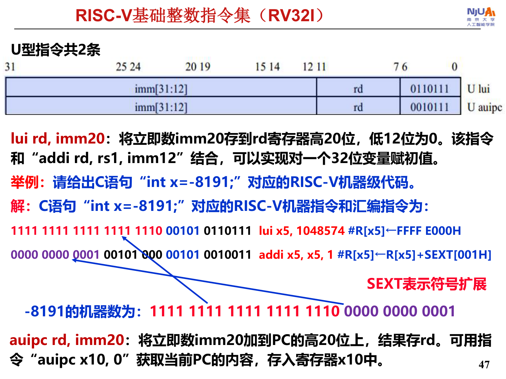
U 型共 2 条，专门装"大立即数的高位"：
lui rd, imm20（lui=load upper immediate，加载高位立即数）：把 20 位立即数放进 rd 的高 20 位，低 12 位补 0。配合addi可给 32 位变量赋初值。auipc rd, imm20（auipc=add upper immediate to PC，把高位立即数加到 PC）：把 imm20 加到 PC 的高 20 位，结果存 rd。auipc x10,0可取当前 PC。
例：int x=-8191; → lui x5,1048574 然后 addi x5,x5,1。
RV32I — I 型详解
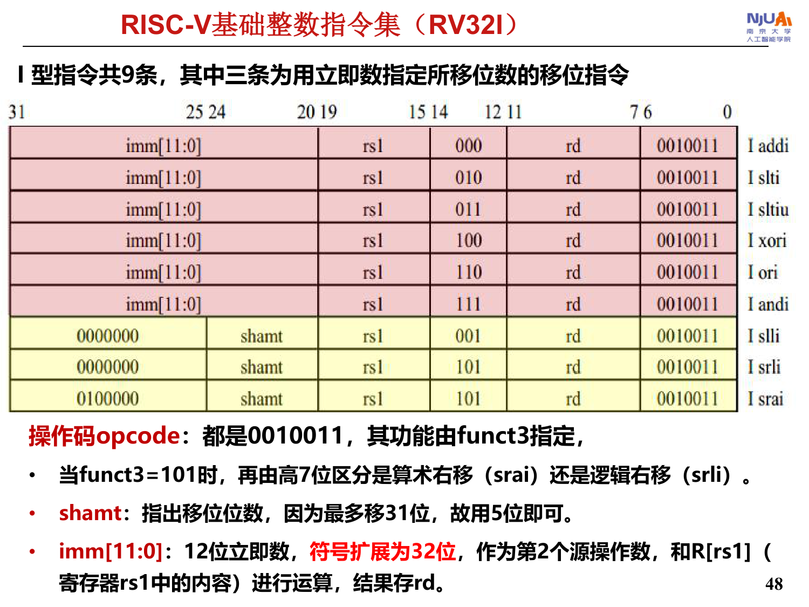
I 型共 9 条，opcode 都是 0010011，靠 funct3 区分功能：
- funct3 选 addi/slti/sltiu/xori/ori/andi（slti=set less than immediate 立即数小于则置 1，sltiu 为其无符号版）；
- 三条移位 slli/srli/srai 用 shamt(5位)指定移位位数（最多移 31 位）；funct3=101 时再由高 7 位区分算术右移(srai)还是逻辑右移(srli)；
imm[11:0]是 12 位立即数，符号扩展为 32 位后与 R[rs1] 运算，结果存 rd。
andi 在此：立即数 12 位、范围 −2048~2047，所以 31 能用 andi，65535 不能。RV32I — 立即数装入易错例题
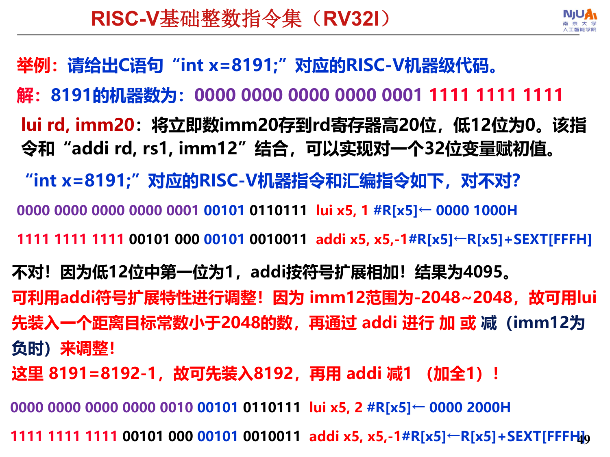
题：写 int x=8191; 的机器码。8191 = 0000...0001 1111 1111 1111。
有人直接 lui x5,1 + addi x5,x5,-1，错！原因：addi 的低 12 位立即数按符号扩展相加，最高位是 1 会被当负数，结果变 4095。
正解：利用符号扩展特性调整——8191 = 8192−1，先 lui x5,2(装 8192) 再 addi x5,x5,-1(减 1)。即"lui 先装一个距目标 <2048 的数，再用 addi 加/减调整"。
RV32I — R 型详解
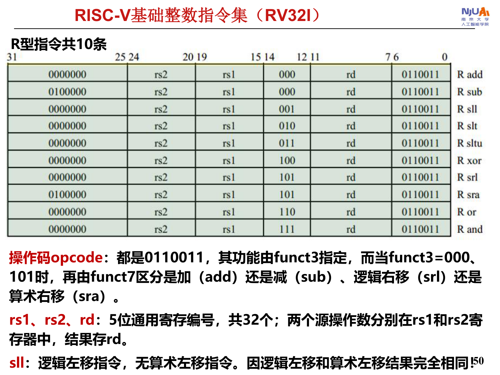
R 型共 10 条，opcode 都是 0110011：
- funct3 区分 add/sll/slt/sltu/xor/srl/or/and；
- funct3=000 时由 funct7 区分 add 还是 sub；funct3=101 时由 funct7 区分 srl 还是 sra；
- rs1/rs2/rd 各 5 位（32 个寄存器）；两源在 rs1/rs2，结果存 rd。
sll 是逻辑左移，没有算术左移指令——因为逻辑左移和算术左移结果完全相同。这是个常见小考点。RV32I — 比较指令例题（64位加法）
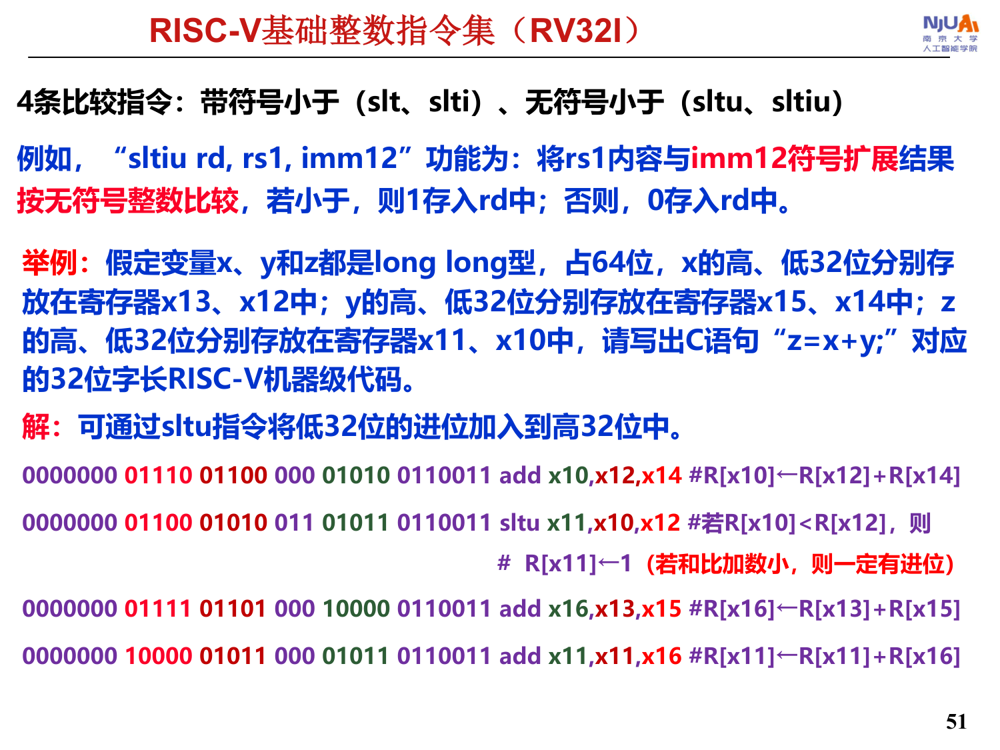
4 条比较指令：带符号小于 slt/slti、无符号小于 sltu/sltiu。sltiu rd,rs1,imm：rs1 与 imm 符号扩展后按无符号比，小于则 rd=1。
用 sltu 做 64 位加法的进位传递
long long(64位) 用两个 32 位寄存器存。低 32 位相加后，用 sltu 判断是否产生进位（"若和比加数小，则一定有进位"），把这个进位加进高 32 位。
RV32I — 控制转移指令（J / I / B 型）
- J 型 jal（jump and link，跳转并链接）：
R[rd]←PC+4; PC←PC+SEXT(imm)<<1。rd=x1(ra) 时是过程调用；rd=x0 时是无条件跳转（因为 x0 丢弃返回地址）。 - I 型 jalr（jump and link register，寄存器版跳转并链接）：
R[rd]←PC+4; PC←R[rs1]+SEXT(imm)。jalr x0,0(x1)即过程返回（ret）。 - B 型分支：beq/bne/blt/bge/bltu/bgeu（beq=branch if equal 相等转移、bne=branch if not equal 不等、blt=branch if less than 小于、bge=branch if greater or equal 大于等于，bltu/bgeu 为对应无符号版）。bltu/bgeu 是无符号比较。目标=PC+SEXT(imm)<<1。
j loop 就是 jal x0,loop。<<1 因为指令地址总是 2 的倍数。RV32I — 溢出检测例题
题：int x,y,z 在 x5,x6,x7，写 z=x+y; 并检测溢出。
规则：x,y 为 int 时，若"y<0 且 x+y≥x"或"y≥0 且 x+y<x"则溢出。用 slti 对 y 与 0 比较、slt 比较和与 x，两个判断不一致（bne）就溢出。
末尾还演示了 B 型分支机器码怎么算偏移量：标号相距 20 条指令、每条 4 字节 → 偏移 80，立即数=40（因为 <<1），按 B 型把立即数拆位填入。
RV32I — 存储访问指令
- I 型 Load（5 条）：
R[rd]←M[R[rs1]+SEXT(imm)]。lb（load byte 取字节）/lh（load halfword 取半字）/lw（load word 取字）按符号扩展；lbu/lhu 按 0 扩展。 - S 型 Store（3 条）：
M[R[rs1]+SEXT(imm)]←R[rs2]。sb（store byte）/sh（store halfword）分别写低 8/16 位，sw（store word）写整字。 - 汇编写法：存储地址写成
imm12(rs1)，如lw t0, 0(a0)。
lw t0,0(t1) 就翻译成"以 t1 为地址取一个字到 t0"。Load/Store 是 RISC 唯一能访存的指令——呼应第一讲 RR 工作方式。RV32I — 系统控制指令
- fence / fence.i（fence=内存屏障 memory fence）：屏障指令，RISC-V 用宽松一致性模型，靠它保证存储访问顺序；
- ecall / ebreak（ecall=environment call 环境调用、ebreak=environment break 环境断点）：陷阱(trap)指令（自陷），从用户程序陷入 OS 内核(ecall)或调试环境(ebreak)，属"环境"类；
- csrxxx（6 条）：读写控制状态寄存器 CSR。
★回顾：RV32I 六种格式小结
| 格式 | 典型指令 | 关键字段 | 功能要点 |
|---|---|---|---|
| R | add/sub/and/sll/slt | rs1,rs2,rd,funct3/7 | 寄存器间运算 |
| I | addi/andi/lw/jalr | imm[11:0],rs1,rd | 立即数(符号扩展)/取数/间接跳 |
| S | sw/sh/sb | imm 拆 5+7 | 存数 |
| B | beq/bne/blt/bgeu | imm 拆 + <<1 | 条件分支，目标=PC+偏移 |
| U | lui/auipc | imm[31:12] | 装高 20 位 |
| J | jal | imm 拼 + <<1 | 调用/无条件跳 |
RISC-V 可选的扩展指令集
标准扩展：RV32I 基础上加 M/F/D/A → RV32G(=RV32IMAFD)。每个扩展解决一类需求：
| 扩展 | 解决 |
|---|---|
| +RV64I | 64 位架构，47 条 I 上加 12 条→59 条 |
| M | 乘除运算（8 条 RV32M + 4 条 RV64M） |
| F / D | 单/双精度浮点 |
| A | 原子操作（事务、并发，详见第8章） |
| V | 向量处理 |
64 位架构指令举例
例：64 位架构下把一个 32 位常数装入 64 位寄存器 a0。lui 把高 20 位装入、低 12 位补 0、高 32 位符号扩展；再用 addi 加上低 12 位：
lui a0, 976 # 高 20 位（十进制 976） addi a0, a0, 1280 # 低 12 位
RISC-V 中整数的乘、除运算
- 乘法 mul/mulh/mulhu/mulhsu（mul=multiply 乘法取低位、mulh=multiply high 取积高位、mulhu 无符号、mulhsu 混合符号）：mul 取低 32 位积；mulh(带符号)/mulhu(无符号)/mulhsu(混合)取高 32 位积。
- 除法 div（divide 除法，得商）/divu（无符号除）、rem（remainder 余数）/remu（无符号余数），带符号/无符号各一套。
- 关键：乘除指令都不检测溢出/异常，直接写结果，由软件自行判断处理。
整数的乘运算（细节与对比）
n 位×n 位 = 2n 位积，硬件可保留 2n 位供软件用。三家对比：
- IA-32：一个源隐含在累加器，结果放 DX-AX 等；
- MIPS：mult 把 64 位积放 Hi/Lo 两寄存器，靠 Hi 是否等于 Lo 符号位判溢出；
- RISC-V：mul 取低 32 位，mulh/mulhu 取高 32 位。
回顾：思考题
函数 int imul_overflow(int x,int y)，判断 x×y（int）是否溢出，溢出返回非 0。三问：
- 无符号/带符号相乘的溢出判断规则各是什么？
- x,y 在 a0,a1，返回值 a0，写出 RISC-V 汇编；
- 用 long long 写 C 实现或思路。
思考题的参考答案
溢出判断规则
- 无符号相乘：积的高 n 位非 0 则溢出；
- 带符号相乘：积高 n 位每一位都相同、且都等于低 n 位的符号，则不溢出，否则溢出。
mul t0, a0, a1 # 低32位积 → t0 mulh a0, a0, a1 # 高32位积 → a0 srai t0, t0, 31 # 低32位积算术右移31 = 低位的符号扩展 xor a0, a0, t0 # 异或：为0则不溢出
举例：整数的除运算
RISC-V 除法不触发异常（连除零都不报错），由软件处理：
- 整数 x÷0：商为全 1，余数为 x（截图实测
1/0得 res=−1）； - 最小负整数 ÷ −1（结果溢出）：商=被除数(最小负数)，余数=0。
★回顾：第二讲全景
RV32I 四大类 ↔ 六种格式
| 功能类 | 指令 | 格式 |
|---|---|---|
| 整数运算 | add/sub/and/or/xor/sll/srl/sra/slt | R |
| 整数运算(立即) | addi/andi/slti/slli… | I |
| 装大立即数 | lui/auipc | U |
| 取数 | lb/lh/lw/lbu/lhu | I |
| 存数 | sb/sh/sw | S |
| 分支 | beq/bne/blt/bge/bltu/bgeu | B |
| 跳转 | jal / jalr | J / I |
| 系统 | fence/ecall/ebreak/csr | I |
★终极串讲 + 习题地图
两讲怎么对应
第一讲是"通用设计原则"，第二讲是"RISC-V 这个实例"。对照着记最牢：
| 通用概念(第一讲) | RISC-V 落地(第二讲) |
|---|---|
| 三地址指令 | R 型 add rd,rs1,rs2 |
| 立即/寄存器/偏移寻址 | addi / R 型 / lw imm(rs1) |
| 相对寻址 | B 型分支、jal（相对 PC） |
| 定长操作码 | opcode 固定 7 位 + funct3/7 |
| Load/Store 风格 | 只有 lw/sw 访存 |
| 条件码/比较转移 | slt + beq/bne（RISC-V 无独立标志寄存器） |
💡 你的 7 道作业 → 看哪几页
| 题 | 考点 | 本讲稿页 |
|---|---|---|
| 2(4) | 操作数在寄存器/存储器 | p12 + R1 |
| 2(9) | 转移/调用/返回区别 | p17 + p52 |
| 3 | 相对寻址算位移 | p13 + R1 |
| 6 | 扩展操作码算条数 | p21 + R2 |
| 8 | 指令格式综合 | p6/p11 + p13 |
| 13 | 读 RV32I 循环代码 | p42 + p46 + p52 |
| 15 | 写 RV32I 按位与 | p42 + p46 + p47–49 |